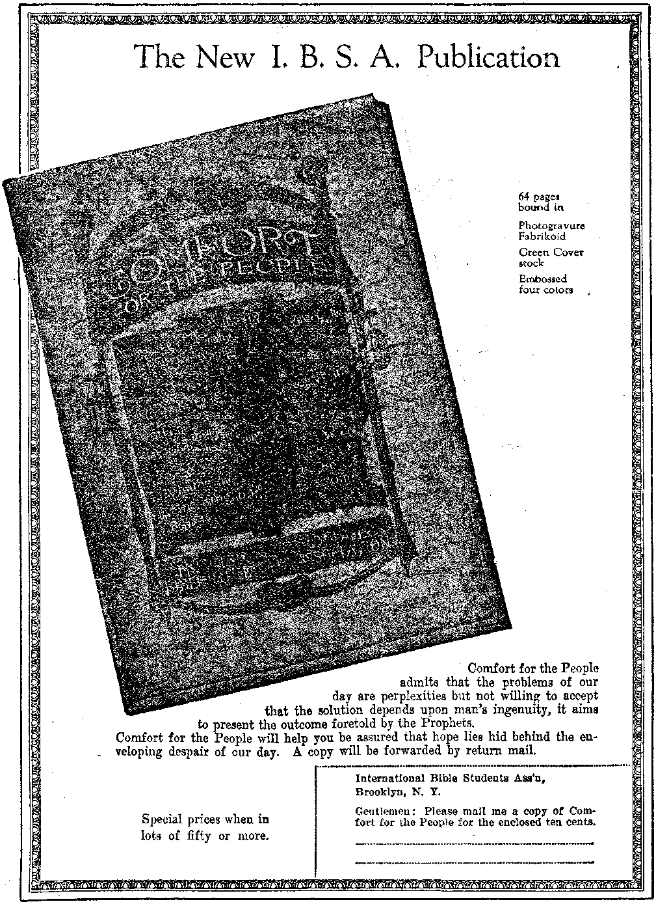

TRUnTH
MISCONCEPTION OF THE TRINITY
5$ a copy — $ lOO.aAear Canada andJoreign_Cpjiiitries. $ 150
x TUNING IN THE UNIVERSE
UNDER THE SOUTHERN CROSS
Vol. VI Bi-Weekly No. 155
August 26, 1925
OLD VORLD DYING
NEV
VORLD BEGINNING
F— ' ■ ......', " ------------l„„ ,;..........;.,:\r.T ........
Contents of the Golden Age
. - .■ '"8g^>t=:z—............. .— .... j
A Professional Perfumery Sniffer .......
Suicides in the German Army........... .
! Portuguese Accused of Slavery
Mexican and Chinese Pawn-shops .......... .
Political—Domestic and Foreign
Priests Jailed in the Ukraine . . . . ■
When London Burns , ..........,■.
Why didthb United States Enter the Wab? .
Science and Invention
Travel and Miscellany
Chile—The California of South America . . .
Brazil—A Coining World Power........... .
Argentine the Progressive .......... 747
The Night and Morning of Man’s Experience
The Bull of the Dead . .............. .
Perpetual Masses fob Only Ten Dollars !......... 766
Studies fbom “The’Habp of God”.............767
Published every other Wednesday at 18 Concord Street, Brooklyn, N. Y., U. 3. A., by WOODWORTH, HUDGINGS & MARTIN
Copartner* and Proprietors Address: IS Concord Street, Brooklyn, Y., V-S. A. CLAYTON J. WOODWORTH . . . Editor ROBERT J. MARTIN . Business Manager WM. F. HUDGINGS . . Sec’y and Treas.
Five Cents a Copy—$1.00 A Ykab Make Remittances to THE GOLDEN AGE
Foreign Offices : British.....34 Craven Terrace, Lancaster Gate, London W. 2
Canadian 38-40 Irwin Avenue, Toronto, Ontario
Australasian 405 Collins Street, Melbourne, Australia
South African ...... 6 Lelie Street, Cape Town, South Africa
JBntered as second-class matter at Brooklyn, N. X., under the Act of March 3, 1873
Volume VI Brooklyn, N.Y., Wednesday, August 26, 1925 Number 155
Under the Southern Cross
STRANGELY enough, the South American Revolution, which lasted twenty years, and which resulted toward the close of the year 1824 in the breaking of the Spanish power in South America, had its start in an uprising against Joseph Bonaparte, who had been placed on the throne of Spain by Napoleon in lieu of the supposedly legitimate king, Ferdinand VII. Like many another king Ferdinand was an unprincipled tyrant and despot, and deserved what he got. Fifty years before the revolted colonies gained their independence the British government is said to have frequently agitated the idea of revolutionizing them and separating them from Spain, with the avowed object of opening up the continent to British commerce.
The plans which Britain made for enlarging her trade with South America proved a success. Before the World War British interests constructed and controlled eighty-five percent of South America’s railroads, harbors and public works, fifty percent of the shipping, commerce and finance and a large part of the industrial and agricultural activity. But the Germans were making inroads into British trade as the Great War broke out in 1914.
The World War turned everything upside down. Britain and Germany each had its hands full, and the United States was forced to take over a large part of their western trade. South America was the only part of the world that was at peace; it was making money hand over fist supplying the nations that were at war; it had money to spend, and spent it freely in the United States, not having any way to reach the usual sources of supply.
This sudden thrusting of a great market upon the United States aroused new interest in the continent to the south of us. To be sure, America has had the Monroe Doctrine for a hundred years or more, which implies a big brotherly interest in the countries to the south, but that doctrine was not an American idea. It was first suggested by Britain and has always received British support. Since the war ended, Britain has recovered most of her supremacy in South American countries.
North Americans are now well established throughout South America also, hence it i« quite in order for us to make some effort to study our great continental neighbor, which is admitted to be the largest custodian of raw materials of any country now on the planet. Like Africa, South America is in effect an island, and enjoys steamship service on all sides and all around its coasts. It is common now for North Americans to visit the southern continent and make the grand circular tour, as in olden times university students used to make the grand tour of European capitals, and as others now, by the Dollar Line steamships, make the grand tour of the world via Panama and Suez.
YANKEES and Spaniards do not naturally mix very well. The one is blunt to the point of discourtesy, the other is accustomed to express himself in the finest, most carefully chosen phrases. One may address a Yankee in almost any manner and give no offense, but courtesy demands that a Spaniard be addressed only in certain ways, and language which may be used in addressing a Spaniard in one station in life may not be used with another. The Yankee is cool to the point of exasperation, the Spaniard is hot-blooded; the Yankee is content to wait on the law, the Spaniard is prone to gain his point by insurrection; the Yankee is Protestant, the Spaniard is Catholic. The Yankee will take a substitute for what he orders and will give a substitute; the Spaniard wants what he orders and nothing else. Americans have lost millions of dollars in South American trade by failing to fill orders exactly as given. The British and Germans are much more careful in this respect.
, Along with the rest of the world, South ’America is pulsating with the heart throbs of the new era. A few years ago the common people of that Undeveloped country were hopelessly submerged. The wealth was all in the hands of a few families. The children of the wealthy were given the best of educations at European and other universities; they were educated to rule; little or nothing was done for the actual workers. But now this is changing.
Throughout South America there are still the inclosed grounds, the walls or high iron fences, the iron window shutters and doors, and the other signs of exclusiveness which mark the dwellings of the rich, but they do not represent what they did a generation ago, nor even a decade ago. There is still evidence of the manana (put it off till tomorrow) spirit on the part of the elderly, but the younger Spaniards are on the march toward the dawn.
The country is still without the fine country homes with which North America abounds, and without fine roads; the governments still own and conduct lotteries, and the tickets are hawked on every street comer; roulette wheels are common; duels are frequent; liquor is unrestrained ; admixture of races is considered inevitable and is not specially discountenanced. In an editoral on “The Spiritual State of South America” Evangelical Christendom of London says:
Bishop Every, who has for many years been Anglican Bishop in South America, says, “There is unfortunately no question as to the debased moral atmosphere of Latin American lands, and it is impossible not to hold the church largely responsible. There is no Christian or partially Christian public opinion. Integrity and clean living are not expected. Honor and truth are exceptional. There is a general lax attitude of tolerance to vice. Among the mass of educated men faith is dead. Beligion is a matter of custom, not conviction.
One would almost think the Bishop is describing conditions in Europe or North America!
WE WILL take a brief glance at the several South American countries, from north to south, first noting something respecting the Andes, extending along the whole west coast of the continent, a distance of 4,400 miles. There are only fifteen known passes across the Andes mountains, except in the southern part of Chile, where the height is not excessive. Some idea of the magnitude of this range of mountains may be gathered from the fact that the average height of these fifteen passes, all of which lie ■ comparatively near each other, is 14,057 feet, 'i
Most of these passes are narrow, steep and 'dangerous, passing through gorges, across yawning chasms, and up nearly perpendicular rocks; nor can they be attempted except by the active and well-practised native or the courageous and well-provided traveler. Two railroads get over the passes in Peru and one between Chile and Argentine. In the range there are many volcanoes, in a state of either constant or occasional action, and frequent earthquakes.
Colombia, the northernmost state of South America, is a country twice the size of France. It has thirty-two emerald mines and unknown treasures of gold, silver, platinum, copper, lead, mercury, iron, coal, petroleum, salt, and other minerals. Bogota, its capital, located only 200 miles from the Pacific coast and 300 from the Caribbean Sea, has hitherto been accessible only by a ten-days trip, made up of short and unsatisfactory trips by river steamers and short lines of circuitous railroad; but it is now reached from the coast in three hours by airplane.
Bogota is in a beautiful valley, circular in form, some thirty miles in diameter. It is about 9,000 feet above sea level, and is considered to have one of the most delightful climates anywhere to be found. The boundaries of Colombia are in dispute on all sides. The population of the country is only 4,300,000, including perhaps 150,000 uncivilized Indians. Two-thirds of the country is practically uninhabited. The principal export is coffee, of which $46,000,000 was shipped last year; also cocoa, tobacco, vegetable ivory, dye woods, rubber, salt, vanilla, cattle, hides, bananas, tolu and minerals, especially emeralds, platinum and gold.
From 1830 to 1861 there was a revolutionary outbreak in Colombia every second year; but the constitution now provides that in case of war the president becomes a dictator, with the right to claim for military service every ablebodied citizen, the age limits being disregarded in practice. In 1899 a civil war cost the lives of 50,000 men. For consenting to rape of Panama from Colombia the United States after twenty years delay awarded Colombia $25,000,000, payable in five annual installments of $5,000,000 each. It is noteworthy that this humanitarian agitation to award all this American money to Colombia did not materialize until some of our patriots discovered oil and other valuable resources in that country.
ENEZUELA, adjoining Colombia on the east, is famous as the birthplace of General
Simon Bolivar, the liberator of South America; but strangely enough Venezuela probably has less liberty today than any other country on the continent. For some reason Venezuela has seemed to lend itself to repeated and long-con-< tinned tyrannies and dictatorships.
The generation that is now passing from the stage recalls the cruel, witty, resourceful and successful strutter and bragger, General Castro, who ruled Venezuela with an iron hand for so many years. It was impossible for anybody to do anything with him except yield to his whims. The foreign offices of a half-dozen governments at once were in a ferment over his atrocious rulings, but found no way to bring him to book.
Castro called himself the man of destiny, the Napoleon of South America. He imagined himself Another Kaiser Wilhelm, and in his fondness for uniforms, gilt braid, brass buttons, epaulets and swords, was the Kaiser in miniature. He talked of conquering Colombia and Ecuador and of eventually forming a United States of South America with himself at the head.
His prisons were diabolical in design and management. Some of the cells were purposely designed so that at high tide the water came in up to the prisoner’s waist. Many prisoners that passed through the gates of these prisons were never heard of later. The official answer always was, “He escaped.” A favorite joke was to chain together face to face two prisoners who were known to be enemies to each other.
After General Castro died his place was taken by General Gomez, who has a hand-picked congress to give an official sanction to his curious acts. General Gomez has appointed one of his brothers as first vice president and one of his sons as second vice president of the republic. His treatment of prisoners was revealed recently. When relatives claimed the body of a j young man of thirty-six who had become insane ' and died in prison, they found his body covered with marks similar to those of the inquisition.
His hair was snowy white, and his skin showed the wrinkles of an aged man........
Perhaps the dictatorship of General (^omez will give way to that of his principal antagonist, General Cedeno. The latter has found a way to utilize the Oronoco river and its mud-covered plains as a way to wear down the army of the dictator. With his army of rough riders he crosses the river at a time when the water is low and the plains are dry. General Gomez raises an army and rushes to attack, only to have his army again and again caught in the rising waters of the next flood, with General Cedeno and his followers safely on the other side of the river.
THE eastern part of Venezuela is given over to the plains of the Oronoco; the western part contains Lake Maracaibo, a little Mediterranean Sea, lying within a Y-shaped range of the Andes opening out on the Caribbean. It was Lake Maracaibo which gave Venezuela its name. When Amerigo Vespucci sailed up into the lake he found the natives living in houses erected on long poles standing in the shallow waters and called it Little Venice, which, in Spanish, is Venezuela.
The piles are so well driven, and the buildings so well constructed, that they show no signs of shakiness in the greatest storms. Each house has two rooms, reached by means of a dugout canoe and a rough ladder made of a small tree trunk and its severed branches. The houses are grouped in villages and connected by planks reaching from door to door. The shores of Lake Maracaibo, although in full sight of perpetual snow, are said to be the hottest place on the continent.
The area of Venezuela is 394,000 square miles, over half of which is covered with forests. The total population is less than 3,000,000, of whom about one-tenth are Indians. One-eighth of the adults can read and write. Vast regions of the country are as yet unexplored.
In the mountainous borderland between Venezuela and Colombia is an interesting race of dwarfs, somewhat resembling the pigmies found by Stanley in Africa. These people, the Macoas, seem to have a mania for living as remote from each other as possible. A small village will be scattered over several square miles, each house on its own hilltop, perhaps a mile, or more from the nearest neighbor. The fields, are still further away. The Venezuelans fear the Macoas and keep far away from their .mountain retreats.
The principal occupation of Venezuela is agriculture. - The fields of the Oronoco plains are specially well adapted to cattle raising. There are large exportations of the hides of cattle, sheep and goats. Aside from this the principal products are coffee, cacao, nuts, fruits, cotton, sugar, rubber, copal, dye woods and drug products, especially quinine and sarsaparilla. Fifty million tortoise eggs are taken annually for their oil. The annual production of pearls is about $100,000.
J. Glimpse at the Guianas
THE one place in South America where European nations have an official foothold is to the east of Venezuela in the country that is commonly referred to as “The Guianas”, where, ranging from west to east, the British, the Dutch and the French govern a combined area of something like 165,000 square miles. The British have over half of this area and the French about one-sixth. The Dutch have the balance. The Guianas are claimed by Brazil and Venezuela, but those two countries have about as much chance of getting them as they have of capturing the western part of Europe.
The Guiana coast is low and swampy. The forests are so dense that access into the interior is obtained only by the rivers. The insects of this region are unrivalled for brilliancy of color. The population is a grand mixture of Indians, Italians, Spaniards, Portuguese, Chinese, Hindus, French, Dutch and British.
The Guiana Indians have a system of enumeration of which the human hand is the basis. Six is a hand and one finger. Twelve is two hands and two fingers. Twenty-seven is a man, a hand and two fingers. Fifty-four is two men, two hands and four fingers. The system is practical and works well.
The principal exports are cacao, sugar, coffee, bananas, rice, maize, rum, molasses, gold, timber, precious woods, charcoal and diamonds. It is known that the mountain ranges are rich in gold, iron, sapphire, mercury, garnets and plumbago, but, the almost impassable forests retard the development of the mineral wealth. The famous Cayenne pepper comes from the neighborhood of the capital of French Guiana.
Brooklyn, N. J.
The French have not made a success of their part of the Guianas. They have used it principally as a penal settlement, and a bad one at that. At present they are discussing the project of raising monkeys on a large scale for surgical purposes, in the rejuvenation of elderly men. The forests of the Guianas swarm with the animal life of the tropics.
Ecuador—the Equator Country
CUADOR is named after the equator, in recognition of the fact that the country lies directly upon the equator, its capital city, Quito, being only fifteen miles distant from the meridian. Quito is located 9,600 feet above the sea, on the flank of a mountain, and enjoys a climate that is temperate and springlike throughout the year. As there is almost no variation in the climate Quito is said to be one of the best places in the world for the cure of tuberculosis. For fear of earthquakes there is not a stove, stovepipe or chimney in the town; cooking is done over charcoal fires.
The Indians in the highlands of Ecuador and adjacent countries have a bad name as head hunters. They have a method of extracting the bones of the skull and by means of hot stones shrinking the head to the size of a fist, with all the features perfectly preserved. Two European travelers in the country recently became separated from one another and one was horrified to have his friend’s head offered to him for about $100, which is about the going price. The medical students of Quito have learned the art and are said to be injuring the head market somewhat, although the work of the natives still brings the higher prices.
Ecuador is the owner of the Galapagos Islands, or the Archipelago of Colon, as the Ecuadorians like to call it. This island group is famous for its prodigious turtles and other reptilians. Until recently the islands have been used only as a penal settlement.
The best Panama hats of the world are made in Ecuador. The laces made in Quito are also famous. Cotopaxi, on the line of the railway from the seacoast to Quito, is the highest active volcano in the world, being 19,614 feet above sea level.
The Ecuadorean peonage system, recently abolished, has freed about 500,000 workmen who were to all intents and purposes slaves. . The total population of the country is 1,500,000.
The industries are mining, stock raising, dairying, lumbering and the production of cocoa, coffee, sugar, tobacco, grain and grapes.
ORDINARILY there is no rain in western Peru. The country is normally a desert, though sheltered by rolling clouds from a pitiless sun. The reason is that the Peruvian shore is usually laved by the cold Humboldt current; but when winds from the Pacific blow over the heated plains the moisture-laden clouds simply expand and do not part with their waters.
One of the common features of Peru is the traveling sand dunes of fine gray crystal sand, with their horns pointing toward the south, whence come the winds. These dunes range from fifteen to thirty feet high, about twenty feet wide across the center, and perhaps a hundred feet long. They move with imperceptible slowness, but so surely that if they threaten a railroad the road has usually to be altered to go around them. An analysis of the dunes shows that all they need is water to make them very fertile.
In the early part of 1925 strange to say, the ocean current off the Peruvian shore suddenly changed its course. Warm currents from the north took the place of the cold Humboldt current from the south, with the astonishing result that rain now falls in torrents in districts where previously it was unknown. The effect of such unexpected rains in a country where every roof is a sieve and most walls are made of mud, not having been built as a protection from rain, may be vividly imagined. The annual guano deposit, estimated as worth $9,000,000, was washed away, thus hitting the United States fertilizer factories a hard blow. The change in temperature of the ocean currents caused the death of myriads of the ocean jellyfish and of the fish and aquatic birds which feed upon them. Within three days the desert was bursting with green, and in two weeks emaciated cattle looked as though they had been corn fed. The rains were so heavy that gardens, farms, and in some instances whole towns, were washed away.
Every Variety of Climate
ON ACCOUNT of the fact that Peru lies on both sides of the Andes it has every variety of climate, and on the eastern side of the mountains has copious rains. The headwaters of the Amazon rise in Peru, and the valleys of these streams are clothed with dense forests, including millions of rubber trees which are so common throughout the northern part of South America. The line of perpetual snow is about 16,000 feet above the sea. In its passage over the Andes the Oroya railroad climbs to an altitude higher than Pike’s Peak.
Ijima, the capital of Peru, is a city of considerable culture and refinement. The University of Lima, founded in 1551, is the oldest seat of learning in the western hemisphere. The undisputed area of Peru is 480,000 square miles, and its population totals 4,600,000, of whom sixty percent are Indians still speaking their native language.
Peru has important mineral resources. It is the chief source of supply of vanadium, used in small quantities in steel to give greater strength and ductility, as well as increased power to resist shock and the effects of vibration and friction. This steel is much used in automobile construction. Other precious metals are tungsten and molybdenum. In twenty years the output of Peruvian mines has increased sevenfold.. Coal is plentiful. Peru is one of the largest producers of petroleum in South America. It ranks third in the world’s production of silver and has the largest source of low-cost copper in the world. Mica is also found.
The chief exports of Peru are wool, alpaca, cotton, coffee, sugar, cocoa, rice, tobacco, grapes, wheat, oranges, maize, ramie, silk, quinine and dyes. Ijima, the capital, is a city of 140,000 inhabitants, a short distance inland from the chief port, Callao, with which it is connected by a railroad running alongside the Rimae river. This river is about 150 feet wide and, prior to the recent rains, nearly all its water was regularly used for irrigation and city water for Lima. Lima reminds visitors of the Orient. There are many Mongolians in the city. Earthquakes are frequent.
WHAT California is to the United States Chile is to the continent of South America, Both are in the extreme southwest of the Americas, very long and quite narrow, partly desert and partly paradise, rich in minerals and fruits, and each has an aggressive and progressive citizenry and many Japs. In all these and other characteristics the two are very similar.
' Like California, Chile has a coast range of mountains, and also one farther back, and the valleys between constitute the source of her greatest permanent wealth. The length of Chile is 2,629 miles, but its average width is only 101. The north is a hot desert; the extreme south is a cold region of almost incessant rains. Punta Arenas, Chile, is the most southerly town in the world.
Santiago, the capital and chief city, is situated about 2,000 feet above sea level. It is the fourth city in size in South America and next to Rio Janeiro is considered the most beautiful. The trolley conductors of Santiago are ’women with white aprons, who wear little sailor caps perched on their heads. Santiago has great contrasts of riches and poverty. The rich are very rich; the poor are very poor; there are plenty of limousines but few Fords. There is no plumbing to speak of. The houses of the workingmen are mostly of one room. There are plenty of rich churches and bronze and marble monuments.
Valparaiso, half the size of Santiago, is the principal seaport and is sometimes called “The Chicago of South America” because of its enterprise and commercial activity. The country as a whole is wealthy and prosperous. It owns 2,836 miles of municipal railway, sufficient to more than liquidate the national debt. Much of its prosperity is due to its nitrate deposits.
The curse of Chile has been that the whole country has been pretty well owned by about 100 influential Roman Catholic families from the Basque provinces of the Spanish Pyrenees. An unwritten law has made the president of the country a figurehead, subservient to the senate; and the control of the senate, by the same unwritten law, has remained within these few families. Little by little the people have been pressing their claims and the aristocracy are gradually receding as education and other reforms spread. ’
The country is calling for settlers; and agents in Tokio have offered to every homesteader forty acres of good land, with twenty acres for each son of eighteen years or over, a yoke of oxen, a set of agricultural implements and a sum of money equivalent to fifteen dollars per month for the first year of residence. Considerable numbers of Japanese have taken advantage of the offer.
Like all other South American countries to the north of it Chile has great resources in timber which will some day be commercially available. The region about Santiago is celebrated for grapes, figs, melons and other fruit. Grapes grow in bunches eighteen inches long; and the melons, every bit equal to American melons in flavor, grow to be four or five times as large. Chile is the second largest silver-mining country in South America and the third largest copper producer in the world.
OLIVIA is situated for the most part about 12,000 feet above sea level and is to all intents and purposes buried alive. It is on the roof of South America, with no way to get down. Its population is 2,000,000, of whom thirteen percent are pure white. It is really an Indian republic.
Two miles above sea level is Lake Titicaca, the size of Lake Erie, the highest navigable body of water on the globe. About its shores the Indians live as they did four hundred years ago, before the coming of the Spaniards. The Indian women often wear eight or nine skirts at once, making them look like perambulating umbrellas.
Bolivia is the second tin-producing country in the world and is sometimes called “The Land of Ten Thousand Silver Mines”. Thousands of men have been worked to death in Bolivian mines since the Spanish conquered the country. In ancient times Bolivia was a part of Peru. It takes its present name from Simon Bolivar, South America’s liberator.
An indication of the push which has characterized the Standard Oil Company may be gathered from the fact that in this most inaces-sible of countries they have undertaken to build roads, haul machinery through the jungles and transport supplies in order to develop an oil field 320 miles distant from the nearest railroad. Such a company ought to succeed.
The principal exports of Bolivia are precious metals, gems, rubber, cocoa, coffee and wool. The imports are cloth, clothing, hardware and machinery. Some American farmers who migrated to Bolivia a year ago were glad to return to America penniless in order to get a fresh start in a land where conditions of life are not so primitive as in Bolivia.
THE world’s greatest storehouse of materials is in Brazil. Thus far civilization has done little more than stand upon the threshold and gaze upon a land which will some time house billions of people, literally. Here is a land larger than the combined area of the United States of America and a goodly portion of wmstern Europe thrown in, traversed from end to end with the greatest system of navigable rivers on the planet, a soil that will produce anything, and a good foundation already laid for the country’s development, which will now take place rapidly. Even now Brazil controls the wmrld’s coffee markets; already its capital and chief city, Rio de Janeiro, "with its million population, claims to be the world’s most beautiful city, and there seems to be no doubt that in its natural setting the claim is well made.
Brazil has been somewhat delayed in development because its people have felt that Europeans and North Americans could not be trusted, and they have therefore neglected to seek and to use the capital which is needed and is available. They wish to have their country developed, but do not care to see its profits carried elsewhere. They do not wish to see the Brazilian people work for low wages in order that great financiers in Europe and America may have more than heart can wish. They prefer to wait a little and have their own people reap the rewards which are sure to come.
The people of Brazil are an unusual people engaged in an unusual experiment. A general fusion of whites, Negroes and Indians is in progress. No color line is drawn, absolutely none, in business, government or socially, with the result that a new race is coming into existence. These people are sober, quiet and serious. They are not drinkers. If it were not for the whites there would not be a bar-room in the country. Most Brazilians think of Americans as a wild, fighting, cursing, illiterate, drunken people; and for this they cannot be blamed. They judge by what they have 'witnessed. An intoxicated native in Brazil is rarely seen. The sight is so unusual as to attract general attention.
Brazil is such a large country that it has many 'distinctly different tribes of Indians. Some of these are much more debased than the North 'American Indians; but an explorer, J. G. Culbertson, says of one of the tribes which he visited, the Machigina, that “the South American interior is today the safest place I know, far safer than any of our cities. The people are the most honest people I have found in the world. Nowhere in the world is a woman so respected as among these people, and the only danger to the explorers comes through disrespect of the native women.” One tribe of black dwarfs lives in holes covered over with leaves and sticks.
Another explorer, George R. White, in the South American Messenger says:
With one honorable exception, all the Roman Catholic priests with whom I came in contact during my journey were immoral, drunken and ignorant; every mission which they had started had utterly failed to accomplish the christianizing of the Indians, and the tribes who have come under priestly care are decidedly inferior in morals, industry and order to the tribes who refuse to have any intercourse whatever with the whites.
The population of Brazil at the last census was 30,553,509, or about the population of the United States in the year 1860. The language of the country is Portuguese; about twenty-five percent of the people can read and write. Negro slavery was abandoned in 1889. The Moorish custom prevails of carrying burdens atop the head.
NTIL 1889 Brazil was a kingdom. The last of the emperors, Dom Pedro II, was deposed in that year. He was a highly educated man and exerted every effort to increase the knowledge of his subjects. He is believed to have had at heart the true interests of the Brazilians and is said to have been completely broken-hearted at the ingratitude of the people for whom he had labored.
The constitution of Brazil is the same as that of the United States of America, but in actual practice the component states exercise more of their state rights and occasionally ignore and sometimes defy the federal laws. The senate, not the president, is the controlling factor in the government. Road committees in the more thickly settled parts of Brazil are now cooperating with the government in putting a network of automobile roads over the farm sections.
The national capital, Rio de Janeiro, is confidently claimed to have the most beautiful driveways in the world. One of those skirts the shore for miles. On the one side are broad mosaic walks; on the other the waves rushing and roaring and breaking on snow-white sands; in the center are parkways filled with tropical palms and flowers. At the end of the driveway is Sugarloaf Mountain, access to the top of which is gained by an electric basket cable car holding twenty passengers. The view from the top is magnificent. At another point Mount Corcovado, 2,200 feet high, is ascended by a cog railway, and the view is unsurpassed.
The shopping center of Rio de Janeiro, the Rua Ovidor, is unlike any other shopping district in the western world or perhaps on the globe. The street is barely twenty-five feet wide, but no wheel traffic of any kind is permitted, and the street proper, as well as the sidewalks, is paved with glazed tiling.
The shops have no front walls but open out directly on the street, and it is confidently claimed that there is nothing anywhere in the world that money can buy that is not to be found in those shops. Moreover, it is characteristic of all shops in Brazil, even in the smallest towns, that the polishing cloth is in constant use, so that the glass is unspecked and the woodwork at all times is absolutely dustless.
Rio de Janeiro’s water supply and sanitation are strictly up to date and there is an almost total absence of flies and mosquitoes, so much so that no screens are used. The hot months are December, January and February. Winter comes in June, July and August.
RAZIL was originally called the country of Brazilwood by that ubiquitous gentleman, 'Amerigo Vespucci, who had such a remarkable faculty of naming things and having the names stick. Amerigo thought that the country would be famous for supplying a dye needed in Europe, But Brazil has done more than furnish dyes for man’s exterior adornment. She supplies seventy-five percent of the coffee wherewith he is wont to decorate his interior, morning noon and night. To be sure coffee is poison, and everybody knows it, but everybody loves it and everybody drinks it until splintered nerves make it necessary to take up Postum or preferably the new denatured coffee, Sanka, from which ninety-seven percent of the caffeine has been removed. Sanka is really a very fine drink, tasting precisely like coffee. No; we do not get any commission! But when we learn of a really good thing we like to let our readers know of it.
Sao Paulo produces eighty percent of Brazil’s coffee, or something like fifty-five to sixty percent of all the coffee in the world; and as a result of careful study this town now maintains a nearly perpetual corner on the coffee market, and is making money by the barrel. The state of Sao Paulo is the size of New England and New York state combined. Its coffee output is fixed and limited to thirty-five thousand bags per day, so as to hold up the price. Before any wealth may be moved out of the state of Sao Paulo it must pay an export tax. The Sao Paulo state government maintains a snake farm, where serums to cure snake bites are prepared and distributed. It is said that the average arrivals of snakes at this farm, from all parts of Brazil, are five hundred a day.
OF THE fifty-five largest rivers in the world thirty-three are wholly or largely within the boundaries of Brazil. Not only is the Amazon the largest river in the ■world but it drains an area wider than the Mississippi, Missouri, Danube and Nile combined. Seventeen of its tributaries are from 1,000 to 2,300 miles in length. Its shores are lined with impenetrable primeval forests thronged with monkeys, parrots, sloths, boa constrictors, anacondas and pumas. Its waters teem with turtles, crocodiles, water fowl, tapirs, and fishes of at least 1163 varieties. Half a hundred steamers suffice at present for carrying a trade that will some day fill the river with craft. Sunstroke in the Amazon valley is unknown.
The famous Brazil nut grows on a large straight tree that rises to a height of 100 feet or more before it branches. The nuts are the size of a man’s head, weigh several pounds and fall with force sufficient to kill. Each nut contains eighteen to twenty-four kernels, fitted to each other with such perfect skill that once disturbed they can never be replaced. These nuts supply the finest watchmaker’s oil. They are highly regarded as a preventive of constipation and bowel disorders.
The soil of Brazil is so rich that plowing is not done. The only agricultural instrument used
is the hoe. Corn is planted by making holes in . the ground with a sharp stick and. dropping the seed into the holes, but although there is no cultivate on of the soil crops of twenty-five to forty bushels to the acre are not uncommon.
Brazil was at one time the leading diamond country of the world. Iron ore is found in great quantities in several of the states. It has vast and fertile pastures upon which millions of cattle will some time be raised. Even now it exports large quantities of meats, hides, wool, . goat and sheep .skins. Other important crops . are sugar, tobacco, cotton, Paraguay , tea, rub. her, cocoa, timber, dye woods, drugs.
T) ARAG UAY seems like a little country on -®- the map but it is the size of California; and although it lost 1,200,000 inhabitants in its futile and foolish effort to subjugate Argentina sixty years ago, it still has a population of 631,347, including 50,000 Indians. Luscious oranges may be had in Paraguay at the rate of eight for a cent. Immense forests yield valuable timber. Building marble and valuable clays abound. Wild animals are numerous. Education is free and compulsory. Rain is abundant. Snow is unknown. Thunder storms with high winds are frequent. Immigration is encouraged by un. usually liberal grants of land and other concessions. ..
URUGUAY is the smallest country of South America. About the size of North Dakota, with a population of 1,094,688, it is principally an outlying territory for the magnificent city of Montevideo (Mountain View) which is its capital and one of the chief seaports of South America. As in Paraguay education in Uruguay is compulsory. The chief exports are hides, tallow, meats, Paraguay tea, wool, rubber, skins and furs. Large areas are still covered with forests. Seals abound in the islands off the coast. Montevideo, with a population of 291,465, is considered one of the most cosmopolitan cities ... in the world. Nearly every language is spoken in its streets. Duels are still fought in Uruguay, ,. sanctioned both by law and by public opinion. . . Great attention is paid to the-improvement of live stock.
IT IS generally agreed that.the thing which has made. Argentina the most progressive country in South America is the influence of one man, Sarmiento, born in the little, tow’n of San Juan in 1811. Sarmiento had unlimited thirst for education and unlimited ambition that others might have the same. As a direct result of his influence Argentina has today the best school system in Latin America. Her teachers are better paid than even in the United States.
In marked contrast with the United States the schools of Argentina are under the direct control of the government. They have had the effect of turning the people in the direction of socialism, with the consequent restlessness, of labor, and the spread of cooperation. When Argentina has a strike everything is tied up tight. In the early part of 1919, when the dock workers' strike was on, not a ship entered the port of Buenos Aires in three months.
The temper of the Argentinians is shown in their independent withdrawal from the League of Nations, because of their belief that the present League is dominated by questions arising out of the World War and is not impartial in its handling of world problems.
Buenos Aires (Good Air), with its 2,310,441 inhabitants is the sixth city in the world as regards population and the largest city of any kind south of the equator. Some idea of the magnificence of its public buildings may be gained from the fact that they have cost $40,000,000. Argentina is now building numerous roads. Aviation is popular, as are also radiocasting and reception.
Argentina (Argentum, silver) is principally a stock raising country.. It exports 240,000 tons of wool annually. The plains are cold and bleak in winter and hot and dusty in summer. Patagonia has been wiped out, having been divided, rocks, ice, penguins, Patagonians and all, between Argentina and Chile. Ships rounding the southern extremity of Patagonia pass within ten degrees of the Antarctic circle. .
On the border line between Argentina and Chile stands the famous Christus statue, the symbol of eternal peace between the two countries. At the base of the statue is this imprint: “Sooner shall these mountains crumble into dust than the people of Argentina and Chile break the peace which they have sworn, to maintain at the feet ©f Christ the Redeemer."
[Radiocast, with other items, from Watchtower WBBR on a wave length of 272.6 meters, by the Editor]
TYURING the year 1924 the motor vehicles licensed in Great Britain numbered 194,000 more than the previous year, bringing the total up to 1,266,416. During the year 1924 there were 845 people killed in accidents on the streets of London, besides 82,708 other accidents to persons or property, On with the dance!
TT IS claimed that there are two thousand men going bareheaded in New York this summer. Considerable numbers of them are to be seen in the Columbia Heights section of Brooklyn, also in the Concord Street section and in various places in Manhattan. The custom is spreading to outlying towns and has cut down the sale of straw hats considerably.
0KL0H0MA CITY has one of the world’s most expert perfumery sniffers, Mrs Cavitt. Mrs. Cavitt has been summoned to Paris to see if she can detect the manner of composition of a perfume taken from an Egyptian tomb. Incidentally she has insured her nose for $50,000 for the period of the trip abroad and paid $400 to have its usual effectiveness guaranteed.
THE Russian Soviet’s budget for next year will amount to 3,560,000,000 rubles, which is about 1,000,000,000 more than last year. 1,568,000,000 will come from taxes, 1,260,000,000 from transportation and 500,000,000 from other state property. The Soviet Commissar has announced that Russia will now discuss the settlement of prewar debts.
FRIENDS of Germany have been shocked to learn that during a given period in which there were 187 deaths in the army from natural causes there were 185 deaths from suicide. The German people are thoroughly discouraged as they compare the present with the past, but if they can only look ahead the future holds all the blessings they have sought, and when these blessings come they will be for all people over the whole wide earth.
FRANCE is considerably stirred, and properly so, by thirty cases of French war brides, sent over from America in a month with their children for a vacation in the homeland, only to be deserted. In some instances the Americans have obtained divorces on the ground that their wives have abandoned them, without even notifying the wives of what they have done.
FOR exploiting the superstitions of the peasantry by supporting a legend that Christ had miraculously appeared to a village shepherd, and by causing the peasantry to erect on the spot some seventeen thousand huge wooden crosses, the Ukraine government has caused the imprisonment of eight priests for various terms. The priests consecrated the crosses at so much per.
JACKSONVILLE, Florida, is getting religion. The pastor of the First Baptist church spoke there recently on the spiritually uplifting topic, “The Most Valuable Piece of Real Estate in South Jacksonville.” There were two choirs for the service, The Booster Band and the regular choir, in all some sixty voices. These worthy efforts to get religion will be followed in a practical way by engaging during the week in the sale of real estate, which is now the occupation of everybody in Florida.
CHARGES against the Portuguese government of maintaining slavery in Africa have been made to the League of Nations Slavery Commission at Geneva, accompanied by enumeration of more than one hundred cases investigated by two American college professors and vouched for by a committee of America’s best known citizens. Natives, under pretense of collection of taxes, are forced to work in fields months and even years without pay; thousands of workers have been deported; women with babies on their backs have keen compelled to work on roads; flogging is prevalent and medical attention unknown. This is from the New York World.
THE experiences of Robinson Crusoe were lived over again by the crew of a three-masted Chilean schooner, which foundered off Pascua Island, a lone dot in the South Seas, in May, 1924. The captain of the schooner committed suicide and several of the crew died from the hardships, but after the lapse of more than a year several of the crew and the wife of the captain were found and brought back safely to Chile.
AFTER three months in Palestine Abraham
Friedland, superintendent of Cleveland Hebrew Schools, returned saying, “New plants, new flowers are discovered every day. A row of trees, planted four years ago in De Gania Alaf is big and beautiful now. New houses are being erected. Men and women coming to Palestine, heart hungry from oppression, soon forget their troubles. The Tiberias is so blue, the slopes of Mount Carmel so green, the air so invigorating, that it is no wonder white-bearded aristocrats, hands unmarred by toil, plough the fields and are happy.”
THE Elizabeth City, North Carolina, Independent, in an editorial on Lincoln’s religion, says in part:
Just what was the religion of Abraham Lincoln and why did he never join a church ? Let Lincoln himself answer. “I have never united myself to any church because I have found difficulty in giving my assent without mental reservations to the long, complicated statements of Christian doctrine which characterize their articles of belief and confessions of faith. When any church will inscribe over its altar, as its sole qualification for membership, the Savior’s condensed statement of the substance of both law and gospel, ‘Thou shalt love the Lord thy God with all thy heart, and with all thy soul, and with all thy mind, and thy neighbor as thyself,’ that church will I join with all my heart and all my soul!” There are millions of men living today who feel on the subject of religion just as Lincoln did, but the church has no more use for them today than it had in Lincoln’s time. Jesus said, ‘Love me and keep my commandments.’ The church says, “Subscribe to my creeds, bow down to my authority and pay the assessments I levy upon you or you go to hell.”
Frederick H. Houck, in the New York Sunday
World, claims that for the Spanish soldiers in Morocco there are no sanitary precautions, no regulations regarding personal cleanliness, no delousing stations; but that there are rifles of 1898 model, uniforms that can be hit at a distance of miles, impossible footwear with rope soles, the cruelest of officers and strict censorship of mails. It seems impossible that such a condition should exist in our enlightened day. It exists in Spain because the revenues for the upkeep of the state church are so burdensome that there is no money for uptodate fighting clothes and modern implements of war.
THE dispute between Chile and Peru over
Tacna-Arica, about which the newspapers have bad so much to say of late, is really a dispute between the two countries to see which shall have the privilege of controlling Bolivia’s exports and imports; for the terminus of Bolivia’s railroad is at Arica. Bolivia at one time owned a strip of country about the terminus of her railroad, but in a controversy over taxes payable by a Chilean mining country the Chilean army invaded the territory. Bolivia called in Peru as an ally, but Chile with her superior forces defeated both countries and seized the province, Tacna-Arica.
The treaty made at the time agreed that after a period of ten years a plebiscite should be held tb determine whether Peru or Chile should have the conquered province, but the terms of the plebiscite were not clear and the plebiscite was not held. By agreement between Chile and Peru, in which the president of the United States was named as arbitrator, President Coolidge has decided that the plebiscite shall shortly be held.
There seems small question but that the province will go to Chile, the country now holding it. The maximum reserve strength of Peru’s army is 90,000, while Chile’s army numbers 600,000. Only two percent of the Peruvians are of pure Caucasian blood,' while the 4,000,000 Chileans are virtually all Caucasians. Peru is backward; Chile is progressive. And possession is nine points of the law. The provinces have been thoroughly colonized by Chileans.
Sidney B. M. Potter, Airman in the World
War, tells in The New Leader what will happen in the next war. The first intimation of war will be the crash of high explosive bombs blowing up the railway termini, gas plants and electrical power stations; next will come phosphorus and other incendiary bombs unquenchable by water; next will come bombs of diclor-' ethy sulphide, one drop of which will disable and a few drops burn to death, leaving a gas behind which persists for weeks, or Lewisite, a solid which becomes a smoke and penetrates most respirators, causing excruciating pain and madness.
When London burns, according to Mr. Potter, gas masks will be of little avail. Mr. Potter says: “A mask is a very unpleasant thing to wear (I have had men vomit inside them); and many persons, women and old people particular-ly, would find themselves physically unable to use them, while the difficulties where young children are concerned are obvious.” Mr. Potter says that only those who have seen a panic-stricken civil population in flight can imagine the horror of vast hordes of human beings trampling one another under foot like wild beasts in their vain attempt to escape. Airplanes will chase them with rains of explosive bullets. Defense will be hopeless, because clouds of smoke will be spread at once over all defensive batteries.
TN MEXICO and in China and perhaps in other countries there are government owned and operated pawn-shops to which any person who has valuables and who is in need of money can go and obtain on loan a certain proportion of the value of the thing pawned. A fixed rate of interest per annum is charged for the use of the money thus loaned. If the article is not redeemed in the stipulated time it is offered at a continually lowered price until sold.
W E ARE asked to express our views on testing cows for tuberculosis. As we understand the matter this is a government requirement, having the force of law, and whether or not we had confidence in the ability of the inspectors we would feel in duty bound, in a matter like this where conscience is not involved, to “submit yourselves unto every ordinance of man, for the Lord’s sake”.
[Reprinted from Golden Age No. 57.)
IF ANY reader of The Golden Age wishes to inquire why the United States entered the World War let him write to Hon. M. A. Michaelson, of Illinois, member of Congress in the House of Representatives, Washington, D. C., and request of him a copy of his “Resolution Asking for Investigation of Foreign Propaganda in America”, presented to the house on May 26,1921. •
The resolution, accompanied by the usual legal phraseology and proposals for investigation, sets forth the following allegations. It is doubtful whether Congress will have the courage or the character to make a public investigation of these charges, and it is certain in advance that the press association and the newspapers of the country would never give them honest publicity if they did so. The United States is now in a position where any gang of plug-hat thugs, if they have means to finance the propaganda in hand, can murder men by the hundreds of thousands and rob the people to the tune of billions of dollars, and reduce them to slavery—all in the most “respectable” manner possible, by corrupting the truth and causing the people to read and believe and then give governmental support to lies, and hence to liars and murderers.
On February 9, 1917, a formal statement was inserted in the Congressional Record in the House of Representatives of the Congress of the United States bearing upon the entrance of the United States, as a nation, into the conflict of the great World War then in progress, such statement appearing upon pages 2947 and 2948 of the Congressional Record of the date mentioned in exact words as follows:
“Mr. Calloway: Mr. Chairman, under unanimous consent I insert in the Record at this point a statement showing the newspaper combination, which explains their activity in this war matter, just discussed by the gentleman from Pennsylvania [Mr. Moore] :
“ ‘In March, 1915, the J. P. Morgan interests, the steel, shipbuilding, and powder interests, and their subsidiary organizations, got together 12 men high up in the newspaper world and employed them to select the most influential newspapers, in the United States and sufficient number of them to control generally the policy of the daily press of the United States.
“ ‘These 12 men worked the problem out by selecting 179 newspapers, and then began, by an elimination process, to retain only those necessary for the purpose of controlling the general policy of the daily press throughout the country. They found it was only necessary to purchase the control of 25 of the greatest papers. The 25 papers were agreed upon; emissaries were sent to purchase the policy, national and international, of these papers; an agreement was reached; the policy of the papers was bought, to be paid for by the month; an editor was furnished for each paper properly to supervise and edit information regarding the questions of preparedness, militarism, financial policies, and other things of national and international nature considered vital to the interests of the purchasers.
“ ‘This contract is in existence at the present time, and it accounts for the news columns of the daily press of the country being filled with all sorts of preparedness argument and misrepresentations as to the present condition of the United States Army and Navy, and the possibility and probability of the United States being attacked by foreign foes.
“ ‘This policy also included the suppression of everything in opposition to the wishes of the interests served. The effectiveness of this scheme has been conclusively demonstrated by the character of stuff carried in the daily press throughout the country since March, 1915. They have resorted to anything necessary to commercialize public sentiment and sandbag the National Congress into making extravagent and wasteful appropriations for the Army and Navy under the false pretense that it was necessary. Their stock argument is that it is “patriotism”. They are playing on every prejudice and passion of the American people? ”
In addition to the information and charges filed by Congressman Calloway in the foregoing statement M. Gabriel Hanoteaux, formerly minister of foreign affairs of the Republic of France, in his history of the late war, states in effect that France was ready to make peace in the latter part of the year 1914, but was dissuaded from doing so by three Americans — namely, Robert Bacon, of the financial house of J. P. Morgan & Co., fiscal agents for the British Government; Myron T. Herrick; and William G. Sharp—and that these men represented to French officials that if France would continue the war these three men would organize a propaganda to put the United States into the war on the side of the Allies, and M. Hanoteaux further stated that the sum of money which was provided to goad the United States into the war was too large even for American comprehension.
The charges filed by Congressman Calloway and the statements made by M. Hanoteaux allege that there was a definite and widespread conspiracy operating in the United States to plunge the Government of the United States into war.
In addition to the information and charges filed by Congressman Calloway and the statements made by M. Hanoteaux, the report of Sir Gilbert Parker, who was in charge of the circulation of British propaganda in the United States, recites that large numbers of resident professors and teachers were employed and newspapers were engaged to publish articles tending to excite the people of America and influence them to enter the war in behalf of Great Britain.
No formal investigation of these grave charges has ever been undertaken by the Congress of the United Stats to determine their truth or falsity.
To allow them to go unchallenged is to cause serious reflection on the purpose of the United States in entering the war.
As a result of the war, this Nation is bowed in grief over the death, maiming, and ruined health of hundreds of thousands of its young manhood, and the people of our country are burdened with an unprecedented national debt, and with resulting high taxes and living costs unprecedented in magnitude and oppression.
SOME twenty-five years ago an acquaintance, learning of the writer’s belief .in the Bible account of the creation of man, and himself being a zealous Darwinite, offered me the loan of a book on evolution. The loan was accepted.
The title of the book has now passed from my memory; but the subject matter was on the (supposed) origin of species and the so-called descent or evolution of mankind. In order to know a subject well one must of necessity know more than one side. To believe or to disbelieve is impossible without some knowledge. Therefore at the earliest convenient moment I began my study. I found, however, that the cheeking up of scientific data that had required the lifetime of a devoted scientist to collect, was quite different from following a plow or pitching alfalfa, which from my youth had been my habitual pastime.
However, I proceeded to wade from page to page. Occasionally I came across statements I partially understood, but had about concluded that my brain lacked a few million years of evolutionary development to permit of comprehension when, to my unbounded relief I found that at the end the author volunteered the information that neither he nor other learned evolutionists had yet found a single unquestionable proof of the evolution of man, although they hoped to uncover that evidence at any time. He seemed to have no difficulty in trailing man up from nothing (with no trail even to start with) through fishes, reptiles, birds, and the various lower animals, to the monkey—but there he lost the trail. If he had admitted that he was on the monkey’s track all the time and then, when he caught the monkey, had ended the chase, as Mr. Darwin was finally obliged to do, the book might have had some value. If Mr. Darwin ever found any proof of the evolution of man from the monkey he certainly never published it.
There are in Mr. Darwin’s book two very plain statements which assert that while the evolution of the lower animals seems conclusive, yet such proof is wholly lacking in the case of man. I therefore concluded that if Mr. Darwin, after spending a lifetime in research, had found no proofs of human evolution, it was useless for me to waste further time on it. I furthermore felt that if the facts Mr. Darwin uncovered concerning the evolution of the luwer animals had been indispensable, the Creator doubtless would have given in His Word a more detailed account of their origin, as He did of that of man. I resolved, nevertheless, that if the “missing link” was ever found I would examine his credentials; but to date there have been no applicants for the position.
Evidently Mr. Darwin was an honest man, a true scientist, and it is regrettable that so many of his followers disgrace him by neglecting to adhere to facts as he did. No person should proclaim himself an evolutionist until he has given Mr. Darwin’s works a careful reading. Of the countless number of people who call themselves evolutionists, I doubt if many of them have a thorough knowledge of what Mr. Darwin’s researches brought to light. They simply take a glance at the gulf, which really does not seem wide; the monkey on one side, and his nearest likeness on the other; they throw in the skeleton of a four-toed horse, or anything handy, give the monkey a few millions of million years time, and then tell him to come on over. This gulf between man and monkey has been the dumping place for the skeletons of pigmies, giants, freaks, and all kinds of animals prehistoric, antediluvian and modern. It is visited periodically by feather-weight scientists who seldom leave without adding or subtracting a few million years from the age of the monkey’s tail. It must be a wonderful view, both backward and forward, from the banks of that gulf.
Arthur Brisbane has just returned with what he terms the “latest scientific idea”. He says in substance: If Americans with Darvin’s help could investigate their ancestry they would probably be surprised; for according to the latest scientific idea, men would find three different queer animals, one like a gorilla, one like an orangoutang, the third like a chimpanzee— ancestors respectively of the ethiopian, mon-golian, and white races—and we would be just as much surprised if we could stare into the future and see our descendents of ten million years hence! . . . Our ancestors, all jaw and no forehead, would shock us less than our descendants, all forehead and no jaw.’
We wonder if Arthur will believe us on as slight evidence as he does the scientists when we tell him that the Bible goes the scientists one better and gives the surnames of these “three queer animals”, also those of their ancestry back for sixteen hundred years. Their names were respectively Ham, Shem, and Japheth, sons of Noah, who was a direct descendent of Adam. The manner of Adam’s origin is given in Genesis 1: 27, and a more detailed account in Genesis 2:7. The Hebrew word translated Ham means dark, swarthy; that translated Japheth means light; and that of Shem, old, renowned. (Young’s “Concordance”) Possibly Shem’s was the original color of the human race.
From the Genesis account, which we suspect Mr. Brisbane’s scientists has been reading, these “three queer animals” and their near relatives, seem to have been quite an intelligent tribe. The first evidence of their wisdom was the reverence for and obedience shown to their Creator, in building the ark; otherwise they never would have had the honor of being our ancestors. We are truly thankful to our heavenly Father that these men were not evolutionists, but understood their relationship to the Lord, and were by Him accounted worthy to repopulate the earth, and that to them our ancestral line dates back, and not to denizens of the menagerie.
We sympathize with Mr. Brisbane. We believe he has been deceived by some fake scientist into publishing a distorted version of a Bible truth. The Bible is not copyrighted. We see for him no redress. We can only recommend a careful, prayerful study of the Scriptures in order that it may not happen again.
THE thought of tuning in on the universe is startling, but startling things are habitually happening now-a-days. There have been so many thrills over new things during the past few' years, and people have stood with “their eyes wide open with amazement” so often and so long that the surprise faculties of many have become somewhat exhausted, and it now takes something ultra-ordinary even to excite them.
The “irresistible” of physical facts of today have smashed so many of the “immovable” theories and creeds of yesterday that the world is literally strewn with the wrecks of time. They cannot be repaired or rebuilt. The only thing to do is to clear away the debris to make room for something else. What that something else will be remains to be seen. But whatever it will be it must be on a vaster scale and with much broader foundations of knowledge than anything heretofore dreamed of. The builders will need much wisdom to use the large amount of knowledge-material now accumulating.
Man is a wonderful creature, yet he is not the producer of any original material. Working with material already here he has brought forth so many inventions within the past fifty years that he has almost “turned the world upside down” so far as methods of living and working are concerned. During that time more inventions along scientific and mechanical lines have been brought forth than during all the previous record of human existence on earth.
Any one fifty years of age can remember when we had no typewriters, adding machines, talking machines or electrical washing machines; no automobiles, electric cars, nor submarines; no cash registers, cream separators, dynamite, nor smokeless powder; no fireless cookers, nor motion pictures; no Roentgen rays, telephone girls, vacuum cleaners, sky-scrapers, subways nor electric lights; not to mention thousands of other things we now use as everyday necessities.
We smile at the boy playing with his blocks who, when he has formed some new combination, says, “Oh! Come and see what I have done!” Man is but a little larger boy playing with somewhat larger things which some one else has given him. Now we have the newest plaything, the radio. "What a world of joy it has brought to millions of people! Thousands who live in the cities but who are confined to their home by sickness, old age, or home duties, or while experiencing the exhaustion of a hard day at the office or factory, have taken on a new lease of life by listening over the radio. Thousands who live in the country districts, unable to go but seldom to the city, can now attend the best of operas, musicales, lectures and religious sendees of distant centers, by having them brought by radio within their own homes.
This new servant of man is the most attentive, alert and obedient servant humanity has known. Nobody knows how long he has been around waiting for someone to set him to work. Man did not create him nor make him, but just “picked him up”, and after finding him made various liveries for him to work in. And his capacity for service seems unlimited. After listening to a lecture or two, or an orchestra recital, perhaps we shall yet be able to shift the dial and bring in 0 R N G, from Florida, or BENS from Boston, or C L R Y from Michigan or WINE from Paris.
It makes no difference whether you talk English, Russian, Spanish, French or Japanese; the radio can talk them all and will deliver just what you order. Not only does it give you the world news, the market reports, music and mirth, but by tuning in on SONG you hear soul-satisfying religious anthems; and to further aid you in your evening devotion WORD will enter your home and gladden the heart of each member. And all this without the trouble of dressing up and going out in the weather.
Weather makes very little difference to the radio set.. - ,
, . When as children we read about Aladdin and his lamp we opened wide our eyes in amazement; but the radio makes that wonderful lamp look like a toy balloon alongside a zeppelin. Edward Bellamy had a vivid imagination which most of his readers smiled at and thought it was ■working overtime. But the physical facts in the field of radio today exceed the imagination of all past writers and thinkers. Yet with it all, man has not created anything new nor discovered any new lawrs of nature. He has simply found a way to use the material which a higher Power than man had long ago supplied.
This -world is a pleasant place to live in. If all the rascals were put out of business and every one else enjoying perfect health, with no .worry over sickness, accidents, high prices or life insurance, this planet would be almost heaven itself. The fact is it is already a part of heaven; it is one of the heavenly bodies, and is certainly under the control of One far greater than man.
Speeding along at over 1000 miles per minute, 67,000 miles per hour, this earth goes pretty steadily, without much jolting. It has no track, but it keeps to a regular schedule, and must be back here at this very point, just one year from now, to the minute. It has about 600,000,000 miles to make, so it has to jog along. No express train ever had a better record for maintaining schedule. Evidently it has a good Dispatcher in control. Yet the earth is but one of a large family of planets, each one speeding along swiftly, quietly, always on time, minding its own business without disturbing anybody else; although we occasionally feel some drawing influence from other planets, as though they might like to get better acquainted with us.
Would it give you a thrill if you should happen to tune in on Mars some evening? If you heard the announcer say, “Station HOPE, Canal ' Zone, Planet Mars”? Some one might say, . “Nonsense, that would be impossible/' That is what people have said about many other things that we have freely in use today. Some one might ask, “Well! How do we know Mars is even inhabited?” We do not know, but there was a time when this earth was not inhabited. ’That ■ did not prove that it never would be. If some one had told us fifty years ago, "The time will come when a doctor in Los Angeles will hear the heart-beat of a patient in St. Louis, 1500 miles away, without any wire even” we would doubtless have concluded that he had some rooms to rent in his upper story. But it has been done.
What is impossibility? The word is becoming a meaningless term. We may not be able to do it today, but that is no proof we shall not be able to do it tomorrow. Who knows but that we shall ere long be able to tune in on all the members of our solar family? It would be great sport to get in touch with Venus, Jupiter, Saturn and the others. Some Master Mind with unlimited power created them and keeps them within bounds just as He does with our earth. Otherwise we would all go to smash in no time. These planets did not make themselves, nor give themselves their schedules any more than our watches made themselves and keep themselves in good order. Every reasoning mind must admit that the demonstration of such wisdom and power as is manifested in the order and control of our solar system is proof that there is an intelligent Creator in the heavens. The Bible says that He made the heavens and the earth, and there is certainly no reason to doubt that statement.
If God created man and placed him on the earth with intelligence and ability, could He not do the same for Mars, Jupiter, Neptune and all the others, if He so desired? If He gave earthly men the ability to talk and hold fellowship with each other, could He not do the same on the other planets, and between planets? Is there any reason why He could not establish a universal code and put those on the earth in communication with those on other planets? The Bible declares that angels, coming from somewhere off the earth, have visited this planet and brought us considerable information. What would hinder them from doing the same for the other planets? Could they also not intercommunicate between the earth and the other planets and get their respective inhabitants in touch with each other?
There is nothing unreasonable in the thought that all the planets are or will be peopled by intelligent beings who will he in full communication with each other. There are doubtless many “thrills” still in store for humanity. If God could create intelligent beings and place them on this earth and give them such wonderful and delightful things as the radio, there is no reason why He could not do so elsewhere, and give all
, of them a celestial radio and let. them communicate with each other.
Astronomers tell us that our solar system is but a youngster in the great family of the universe. Professor Curtis claims to have counted 900,000 spiral nebulae, with the aid of the powerful Lick Observatory telescope in California. Some claim that many of these are really separate universes. Light travels 186,300 miles per second, or about 6,000,000,000,000 miles per year; yet some of those universes are so distant that it takes their light thousands of years to reach the earth.
Light travels rapidly enough for man on this little earth. It is instantaneous for everything that man needs, but it would be far too slow to use in interplanetary communication. If anything went wrong and it were necessary to get in immediate touch with Headquarters, and word was sent by telegraph at 186,300 miles per second it would take several centuries for the message to go and the same length of time to return; and things might be all smashed to pieces before instructions could be received. Electricity would be like an ox team for celestial transmission. God must have some medium far speedier than light or electricity for His service, in order that He may keep in instant touch with the outermost parts of His vast domain, and that medium may some day be made available for His creatures’ use.
As our little solar system is speeding through space, would it not be interesting if we could “tune in” on some of the greater systems, and get acquainted with the people there? Wouldn’t you get a “thrill” if you should chance to hear some announcer say, “Station IIA V N, Constellation Taurus, Group Pleiades, Star Alcyone, City of Zion”? Of course, up go many hands in mental horror at the suggestion, with cries of “Impossible! Impossible!” But how does anyone know it is impossible? If God could create all these millions of solar systems and keep them in harmony throughout the millions of years past, what is to hinder Him from keeping them going a while longer and, if He desires, to people every planet with intelligent beings and put them into communication with each other? With so many dead impossibilities lying all around, is it not possible that there may ■be a few more dead ones before long?
; ‘“Well, we shall never live to see it," says another. How do you know? The average length of human life is increasing every year, in spite of the automobiles, bootleg whiskey and a few other things. New knowledge is coming in every day, and many people have lived to be over 100 years of age. There is said to be a Centenary Club in one of the Old Peoples Homes in the Bronx section of New York city. One cannot join that club until he has reached 100. The Bible says that before the flood people lived to be nearly 1000 years old; and we cannot prove that they did not. Why couldn’t that condition come again? There is no information that I know of to cause us to infer that God created this earth for a cemetery.
If God chooses He can even bring forth every person who has ever died, and that is just what He has promised lie will do. He did bring forth a few as samples of what He would do for the many later on. Christ said, “Blessed are the meek, for they shall inherit the earth”; and one of the Bible prophets said the same thing and also added that they shall “delight themselves in the abundance of peace”. It wouldn’t take God long to straighten out conditions on this earth, making it unprofitable for the rascals, and habitable for peace-loving people, thus constituting our planet an annex of heaven, morally and physically, as it is already astronomically. Tuning in the universe and listening to Mars coming in over the loud speaker is not at all improbable and may be one of the pleasures or the future. It is not impossible for the Creator so to arrange it for His creatures.
And why couldn’t man continue to live forever? Why shouldn’t human beings live as long as the angels ? Why shouldn’t man be permitted to stay here where he is acquainted and where all his friends are, instead of being taken up to heaven, where he does not really want to go anyway? This earth is a pretty good place after all. It is getting more desirable and delightful every year, especially since with the radio menare getting more neighborly and better acquainted with each other. The earth looks very attractive to most people. When one gets sick he sends for the doctor to keep him here on earth as longs' as possible. He would rather get his information about the other parts of the universe by “tuning in” than by taking a personal trip to these distant points. And can you think of any good reason why he should not be given that inestimable pleasure in due time ?
IT SEEMS to be a peculiar trait in human nature that when bad news conies or an evil report is circulated, everybody wants to hear about it. The newsboy can always sell more papers when there is a calamity or a disaster to yell about. But let some one come along with a good message, one worth while, well (as they say), “it’s just too good to be true.”
Early in the evening of the day on which our Lord was resurrected, two of His disciples were journeying from Jerusalem to Emmaus, discussing together the sad events of the past two days. After a time, a stranger who seemed to have been following, overtook them and joined their company.
“May I ask the subject of your conversation?” He said.
“We were just discussing the sad events of the past few days,” they replied.
“What events ?” put in the stranger.
“Are you only a stranger in Jerusalem?” replied one of them, “and have not known the things which are come to pass in these days? Do you not know of Jesus of Nazareth, who was a great Prophet, whom the chief priests put to death? And here, on the third day, certain women say that He is risen from the dead, and that His body is not in the sepulchre. You know how some talk! Yes: and some even say that the women are really telling the truth. But it just seems too good to be true.”
Then the stranger chided them. “0 thoughtless ones,” He said, “and slow of heart to believe all that the prophets have spoken! Ought not Christ to have suffered these things, and to enter into his glory ? And beginning at Moses [and here is proof that Moses is writer of the Pentateuch] and all the prophets, he expounded unto them in all the scriptures the things concerning himself.” Then later, the stranger revealed Himself as their risen Lord. The news of His resurrection was true!
Human nature is much the same today. There is a slowness of heart to believe the things written. The Bible is full of good tidings, good news, but there is little disposition to put confidence in it. Much of this results from the fact that the religious leaders have not encouraged the people to study the Bible. The good news contained therein is not “too good to be true”.
Leaning to the other extreme we are wont, sometimes, to expect the promise before its preparation is completed. The small boy is highly elated when told on Christmas Eve: “Santa is coming tonight.” He is on needles and pins until the morning arrives, and can scarcely sleep. God has spent nearly two thousand years in preparing for the great morning of blessing which has already begun to dawn upon the world:
The Scriptures use the terms “night” and “morning” symbolically, pictorially. The night pictures the six thousand years of the reign of sin and death, when darkness has covered the earth and gross darkness the people. It represents the time when Satan, that old adversary, the Devil, has had full sway, and has kept his subjects in ignorance and blindness. The morning pictures the Millennial reign of Christ, ■when the emancipation of the human family from the condition and slavery of death to life, liberty, and happiness will be accomplished.
The word morning always calls to our minds the thought of freshness, calmness, vigor, renewed energy, a beginning. These same thoughts are connected with the morning of the golden age. When it has fully dawned, humanity’s flesh shall become fresher than a child’s (Job 33: 25); there shall be a great calm instead of wars, quarrels, and strife of every kind; life will begin to surge back into each obedient son of Adam, resulting in renewed vigor and energy. It will be a new beginning for the human race, an opportunity for life. The Sun of Righteousness will have arisen with healing in his beams, and will chase away all error, superstition, and ignorance. The sunlight will show up and expose pitfalls, snares, and everything which is not right. All noxious vapors will be dispelled; and nature, waking up, will put on her beauteous robes. Then death itself will die.
In Isaiah 21:12 we have a picture of a watchman on the mountain top, watching for the first evidence of the break of day. Upon being asked by a traveller as to its progress the watchman answers: “Morning has come, and still it is night. If ye will ask more [than this question] come back again [for more information].” The thought seems to- be that while the morning is here, yet the night of gloom has 76»
not been fully dispelled; but the fact remains that since the morning has dawned, the darkness must flee away. The curse must go, and the bondage of corruption will be no more.
During the long night of sin, God has not left mankind’s dark sky without some stars. Eve was promised that her seed would crush the serpent. Enoch foretold the coming of the Lord with myriads of His saints. Noah was promised: T will not again smite every living thing as I have done.’ The promise to Abraham has already been referred to. Jacob foretold the coming of Shiloh, the Peacemaker; and all the holy prophets have had their share in placing their “stars” on the dark background of man’s experience with sin. Mankind has not been left without hope.
But the greatest light was spoken of by Simeon, when he saw the babe of Bethlehem: “Mine eyes have seen thy salvation; ... a light to lighten the Gentiles, and the glory of thy people Israel.” (Luke 2:30,32) The father of John the Baptist spoke of the same light when he said: “The dayspring from on high hath visited us, to give light to them that sit in darkness and in the shadow of death.” (Luke 1:78, 79) This great light would be the instrument of the Most High in turning the “shadow of death into the morning”.—Amos 5: 8.
In the 30th Psalm we have a poetic picture of Jesus in His struggles during the hours of darkness and in His apparent defeat, which was really his victory. Jesus in His earthly ministry is spoken of as a “man of sorrows, and acquainted with grief”. Just before His betrayal He said: “My soul is exceeding sorrowful, even unto death.” And, “I have a baptism to be baptised with; and how am I straitened till it be accomplished!” When Judas the betrayer went forth, the Scriptures say: “It was night.” When Jesus entered Gethsemane, it was night; and although the full moon looked down upon Him, reminding Him that He was to fulfil the law, yet it was a dark night of strong crying and tears. Weeping endured that night.
From one tribunal to another Jesus went, and then they crucified Him. He could endure the most excruciating pain, but then came the darkest moment of His life. The Father hid His face from Jesus. Psalm 30:7 describes the result: “Thou didst hide thy face, and I was troubled.” Beneath the waves oT sorrow the heart-broken Son sank into the darkness of death. In that victory, however, He earned the everlasting favor of the Father. The Father’s disfavor was but for a moment, and the gaining of His favor meant life (Verse 5): “For his anger endureth but a moment: in his favor is life: weeping may endure for a night, but joy cometh in the morning.” And joy did come in His morning.
Early in the morning of the third day, the beloved Son burst the bonds of death and came forth. There was joy that day. There has been joy ever since in the hearts of those who have appreciated that sacrifice. And when the morning of the golden age fully dawns, the joy of mankind will know no bounds. Weeping abides during the night, but joy comes when the morning appears. Even the seriously sick are usually aroused and improve as the morning comes on.
The joyous song of the conqueror of death is given us in the remainder of the thirtieth Psalm, a part of which is: “I will extol thee, O Jehovah; for thou hast lifted me up, and hast not made my foes rejoice over me. . . . Thou hast brought up my soul from the grave. . . . Thou hast turned for me my mourning into dancing: thou hast put off my sackcloth, and girded me with gladness.”—Verses 1, 3,11.
In Psalm 49 is another prophecy of the glad tidings of the morning. Man is like the brute beasts that perish. Like sheep they are laid in the grave. Death feeds on them. Thus is portrayed what happens in the night. But we are assured in the next phrase that “the upright shall have dominion over them in the morning”. They shall be loosed from their grave-prison.
In Psalm 46 we are given a picture of the present troublous time. The sea (the masses of mankind) is swollen, and the waves are rolling (discontented). A storm is brewing. The mountains (kingdoms) are moved; the earth (the present order) is dissolved. But to the true church comes peace like a smooth flowing river, and while this storm rages, the promise is (verse 5, margin): “God shall help her when the morning appeareth.” Then will come calmness even to the world: “Be still, and know [recognize] that I am God,” saith Jehovah,
The new King, the Lord Jesus, is poetically represented in His vigor and power in Psalm 110:2,3. His. subjects will be willing in the day of His power, -which will start from the "womb of the morning”, or the very beginning of the morning. He .will be vigorous and fresh and youthful as the dew.
David, in his last words, did not forget to Bing of the Prince of Peace and of the freshness and newness of life to be received by His subjects when the morning would dawn, and an unclouded morning at that. There shall be
"One that ruleth over men righteously, That nileth in the fear of God;
He shall he as the light of the morning, A morning without clouds; .
when the -sun riseth,
When the tender grass springeth out of the earth,
Through clear shining after rain.”
; -—2 Samuel 23:3, 4. B. V.
God’s refreshing truth shall reinvigorate the sin-sick (tender grass—"all flesh is grass”) and restore them again to perfection and beauty.
That which is represented by the rain and dew is clearly indicated by Moses in Deuteronomy 32:1,2 (Fenton):
"Listen, Heaven, and I will speak;
And hear my utterance, Earth I My teaching shall drop like the rain, My utterance spread like dew— Like showers upon the herbage,
And like sprinklings on the grass,”
It has been said that the dew gathers the thickest just before or at dawn. If this be true, then the suggestion might be offered that now the "dew” is falling. It is dropping upon the hearts that are sad and downcast, and that are looking for relief from the distress and trouble now over the earth. The dew, the message that "millions now living will never die”, is comforting and refreshing many of the tender-grass class, and is giving them a hope which they never had before.
The morning is prominent in several other places in God’s 'Word. On the great Passover night for the Jews in Egypt, they were to let none of the lamb remain until the morning; and none of them were to leave their houses until morning. (Exodus 12 :10, 22) Again, the Israelites crossed the Red Sea during the night; and the Egyptians, essaying to follow them early in the morning, were drowned. This pictures the fact that in the dawning of the golden age the Greater than Moses, the Lord Jesus, .will lead all the willing and obedient of earth’s billions out of the bondage of this present evil world; and Satan’s empire (Egypt), and Satan (Pharaoh) and his hosts, will be ultimately destroyed.
The manna which fed the Israelites during their wilderness journey fell early in the morning. The bread of everlasting life is soon to he offered to the world.—Exodus 16: 7, 21.
Job locates the resurrection as taking place in the morning of earth’s blessings: "Thou shalt seek me in the morning, but I shall not be.” (Job 7: 21; 1.4:15) Job did not expect to go to heaven, but looked forward to living here on the earth, after his resurrection.
In Mark 16:2 and Luke 24:1, we are told that Jesus’ resurrection took place early in the morning. To some extent this reminds us of the fact that His second presence in the earth would be a fact early in the morning of the seventh day, the seventh one-thousand-year day, the day when He would gain control of the earth and of those in it. Bible chronology shows this event to have taken place in the year 1874.
St. Paul looked forward to the dawn of the new day. The greater portion of the night of man’s experience with sin and death was in the past; and appropriately he said: “The night is far spent, the day is at hand.”-—Romans 13:12.
The Prophet Zechariah, who lived far back in the night, was given a glimpse of the blessings due shortly on earth when the morning has fully dawned. He wrote: "And it shall come to pass in that day, that the light shall not be clear, nor dark: but it shall be one day, which shall be known to Jehovah, not day, nor night: but it shall come to pass, that at evening time it shall be light. . . . And Jehovah shall be king over all the earth.”—Zechariah 14: 6-9.
The Apostle John also had a vision of the glorious results of the reign of righteousness. He tells us that all the companions of sin and darkness, viz., pain, sorrow, tears, and death, shall be no more. A plant put into the darkness and dampness of a cellar may live; but it will become distorted, deformed, and abnormal in many ways; its leaves will drop off. But bring it into the sunlight, and it will gradually return to normalcy. Likewise, humanity held down in the darkness of night by the curse, has become deformed, abnormal, and has lost to a great extent the original likeness of God. But when the curse is removed, and when the sunlight of G od’s favor again shines upon the earth, mankind will return to normalcy, perfection. Eden will bloom once more, and earth’s inhabitants will again reflect God’s image as did Adam before sin entered.
Revelation 22:3,5: “And there shall be no more curse”; for “there shall be no night there”.
TN A certain small town in the good old state d- of Texas some time ago while the writer was lecturing in a Christian church one evening on the millennium of Christ he frequently referred to that period of time as “the thousand year* reign”. There was present in the congregation, an old lady who on the following morning went about the little town gravely declaring in earnest expression: “That man up at the church last night said it’s going to rain a thousand years!” She had intently listened to the speaker for an hour and all she seemed to have gotten from his remarks was a coming “rain”. She saw the fly on the wall but she had missed seeing the wall.
How many there arc who take note of some one little remark a speaker makes, but lose sight entirely of all the weightier things he may say. The speaker may have uttered a hundred or more good things in the course of his address, all of which has slid off the hearer’s mind like water off a duck’s back. But let the speaker make one little unfortunate remark (as, for instance, calling attention to a little child in the meeting that is disturbing everyone in the audience except its mother) and there is somebody in that audience who passes by all the good things the speaker may have uttered and bears him a lasting grudge because of that one little tiling he said of that noisy or restless child, mamma’s darling. This is seeing the little fly on the wall but not noticing at all the big wall itself. Many will notice the little thing, but the big thing in connection entirely escapes their attention.
If a good friend does us a hundred good turns successively and then does something we do not approve of, we are so apt to forget all the good that friend did for us, and we magnify that one little offense until we have made a mountain out of a mole-hill. We have made an ocean out of a pond; we have noted a fly on the wall but the vision of the wall has escaped us. Puck was right: “What fools we mortals be.”
A publisher prints a hundred or a thousand very fine articles in his journal, and then unwittingly publishes an article that somebody does not like; that somebody forgets all those good and helpful articles and fires into the editor his venom of criticism on that objectionable article he published. Another instance of having seen the wall-fly but not seeing the mighty wall itself. Why not notice the wall and not the comparatively insignificant fly?
The writer of an article, say on birds, may state that “owls do not fly in the daytime”, which is generally true enough, especially in the plural sense. Someone seeks to disparage that whole article by writing to the editor a correction to the effect that he did see an owl once upon a time flying about in the daytime. The author' was speaking in a general sense; the critic was speaking of a specific, isolated instance. The author was regarding the wall while the critic was viewing the fly. The author was describing the doughnut and the critic merely saw the hole. There are optimists and there are pessimists, and the pessimists seem to predominate.
We anticipate the time of that thousand year reign (not rain) of Christ, when full justice shall be done to each and all, even to the Devil, of whom the old lady said, “Anyway he has persistence, he is no slacker.” Perhaps many of us are lacking in persistence. But Satan is one of the beings who see the fly on the wall but fail to see the wall. Finally he will bump into it, as portrayed in Hebrews 2:14; Genesis 3:15; Romans 16: 20; etc. The wall before him was life and blessedness or death eternal. The fly was unholy ambition. He took his choice and must pay the price. The world of mankind in general sees earthly gain, the fly. The Christian sees heavenly gain, the wall.
[Radiocast from Watchtower WBBR on a wave length of 272.6 meters, by Judge Rutherford.]
rpHERE is no doctrine taught by the clergy that is more confusing than that of the trinity. They do not understand it themselves and cannot explain it to anybody else satisfactorily. The doctrine is wholly unsupported by the Bible. The word “trinity” docs not anywhere appear in the Bible.
The definition given by theologians and lexicographers is as follows: “The trinity, a union of three persons in one godhead, to wit: Father, Son and Holy Ghost, so that air three are one God as to substance but three persons as to individuality.” It seems unreasonable that intelligent people would accept such a definition of anything.
THE doctrine of the trinity did not originate with the Lord or any of his agencies. Abbott and Conant’s “Religious Dictionary”, page 944, says: “It was not until the beginning of the fourth century that the trinitarian view began to be elaborated and formulated into a doctrine and an endeavor made to reconcile it with the belief of the church in one God. Out of an attempt to solve this problem sprang the doctrine of the trinity. The trinity is a very marked feature in Hinduism, and is discernable in Persian, Egyptian, Roman, Japanese and most ancient Greek mythologies.” This fact alone shows that the doctrine sprang from the Devil, because mythology is from the Evil One.
If the doctrine were from the Lord, it would be true and would stand the most critical and rigid examination. If it is not true, and therefore of the Devil, it must fall when put to a critical and honest examination.
God’s word is reasonable. He says to those who attempt its study, in Isaiah 1:18: “Come now, and let us reason together.” If the doctrine of the trinity is unreasonable it is 'untrue.
IF Jehovah is one, and the Lord Jesus is one, and the holy ghost is one, then how would it be reasonably possible to add the three together and still make one? That is a different kind of mathematics from any which a reasonable man has ever learned. -
Jehovah is one. He is the great first cause, from whom all good things come. Christ Jesus is one, the Beginning of God’s creation, the Son of God.
The word “ghost” is an English word and means an apparition or spectre. The term “holy ghost”, appearing in the King James version of our Bibles, is improperly translated. The Hebrew word nephesh, from which “spirit” is translated, means breath or vital power. The Greek word pneuma, improperly translated ghost, means the same thing—breath, or wind. It is the same root word from which our English word pneumatic tire is derived. Then if the theologians have properly translated the word it means that a ghost is something that goes around like a pneumatic tire. The fact is, the word is improperly translated. The two original words above mentioned, by all unbiased scholars, by the Revised Versions, by the “Emphatic Dia-glott” and others, are translated spirit. Holy spirit is the proper use of the term and not holy ghost. All scholars recognize that the term ghost, as applied to the Lord or to anything that He does, is improperly applied.
The question then is, Is the holy spirit a person, a being separate and distinct from God and the Lord Jesus? I answer, No. There is no scripture that warrants the conclusion that the holy spirit is a person. Holy spirit means invisible power and influence of Jehovah. In other words, Jehovah exercises His power, and that power is invisible to man. It is holy because it is right and good. The spirit of the Lord is His power.
THE doctrine of the holy trinity is entirely unscriptural. If we find that it is disproved by the Scriptures this should be a complete reason why we should reject it and accept the truth. We shall see that Jehovah God is one; that the Lord Jesus is His Son, and also one; that the two are two beings; and that the holy spirit is the invisible power or influence used either by Jehovah or by the Lord Jesus.
God is not three beings, but one. In Genesis 17:1 we read: “The Lord appeared unto Abram, and said unto him, I am the Almighty God.” Jehovah God is also one of the titles of the great Eternal One.
In Exodus 6:3 we read: “And I appeared unto Abraham, unto Isaac, and unto Jacob, by the name of God Almighty; but by my name Jehovah was I not known to them.”
Psalm 90: 2 says: “From everlasting to everlasting, thou art God.”
Isaiah 42:8: “I am the Lord; that is my name: and my glory will I not give to another.”
Before Jesus came to the earth He was known by the name or title of Logos. The Logos is one who represents another. He was the special representative of Jehovah God, His Father. The “Emphatic Diaglott” is recognized by scholars as one of the best translations of the New Testament. In John 1:1, 2, “Diaglott,” we read: “In the beginning was the Logos, and the Logos was with The God, and the Logos was a god. This was in the beginning with The God.”
God means mighty one. This scripture shows then that the Logos was the beginning- of Jehovah’s creation; that Jehovah is the great First Cause; that He is therefore the Mighty One; and that the Logos is a mighty one. The word Logos is not translated, but is a transferred word. It is descriptive of His excellence, His high position and power. The Logos was Jehovah’s active agent in the creation of all tilings. By Him and through Him all things were created.
The Apostle Paul says: “From the beginning of the world [the mystery] hath been hid in God, who created all things by Jesus Christ.” •—Ephesians 3:9.
The term or title Jesus means Savior of the people. This title applies to Him from the time He came to earth to save the people, We have the repeated testimony of Jesus that He and His Father are not the same in being, nor the same in substance, nor the same in individuality. In John 5:30 He says: “I seek not mine own will, but the will of the Father, which hath sent me.” And again in verse 36: “The works which the Father hath given me to finish, the same works that I do.” And again in verse 37: “The Father, . . . which hath sent me, hath borne witness of me. Ye have neither heard his voice at any time, nor seen his shape.” The human form is not the shape of Jehovah.
And again in John 12:49 He says: "For I have not spoken of myself; but the Father which sent me, he gave me a commandment, what I should say, and what I should speak.”
When Jesus stood at the grave of Lazarus to awaken him, after they had taken away the stone “Jesus lifted up his eyes, and said, Father, I thank thee that thou hast heard me.” We might ask, Was he giving thanks to Himself? Jesus then said that He thus prayed to the Father that the people might believe that God had sent him.—John 11:41,42.
In speaking to his disciples Jesus said (John 16:27): “I came forth from the Father, and am come into the world: again, I leave the world, and go to the Father.”
Man had sinned and lost the right to life and everything incident thereto. It is the. will of God that all men shall be saved from .this judgment of death. So states the scripture in 1 Timothy 2:3,4. God sent .His Son Jesus, to the earth to carry out His purposes. Of Himself it is written in Psalm 40: 7, 8: “Then said I, Lo, I come: in the volume of the book it is written of me, I delight to do thy will, 0 my God: yea, thy law is within my heart.”
Jesus did not say that He had no will of His own, but He did say that He would not exercise His will contrary to that of the Father.
Jehovah God had promised to redeem, the human race from death, to give a ransom for mankind. Since there was no man on earth to do this, He sent His beloved Son made in flesh. He transferred the Son’s life from the spirit to the earthly plane, as it is written concerning Him in John 1:14: “The Logos was made flesh, and dwelt amongst us, (and we beheld his glory, the glory as of the only begotten of the Father,) full of grace and truth.”
In Matthew 20:28 it is written that Jesus came to give himself a ransom, and in John 10:10 it is written that He came that the people might have life, and that they might have it more abundantly.
If the doctrine of the trinity is correct, then everything that originally belonged to Jehovah likewise belonged to the Son; and yet Jesus states in Luke 22:29, in speaking to His disciples about the coming kingdom: “I appoint unto you a kingdom, as my Father hath appointed unto me.” Now had the Father and the Son been one it would not have been consistent for the Lord to appoint unto himself a kingdom, because He must already have had it.
Again in John 5:26 Jesus says: “For as the Father hath life in himself; so hath he given to the Son to have life in himself.” If the Father and Son are one in being, in individuality and in substance, as the trinitarians say, it would be inconsistent for the Father to say to the-Son that He would give Him life if obedient. Had Jesus been disobedient, He would have been destroyed. Would Jehovah have destroyed himself ?
The record without any dispute is that Jesus was on this earth thirty-three and one-half years. If God and Jesus are one and the same being, then heaven was without a God for thirty-three and one-half years.
When Jesus was about to he put to death, the record shows Him in Gethsemane and praying unto God. This is the.most marvelous prayer ever uttered. We read in John 17:1 that Jesus “lifted up his eyes to heaven, and said, Father, the hour is come; glorify thy Son, that the Son also may glorify thee.” If the doctrine of the trinity is correct, then Jesus on earth was praying to himself in heaven. That would appear to be a mere farce and uttered, as some prayers on earth are uttered, to impress those who stood by. But on the contrary God the Father in heaven was being petitioned by His beloved Son then on earth.
Just previous to this prayer Jesus had stated to His disciples in John 14: 28: “I go unto the Father: for my Father is greater than I." If greater than the Son, Father and Son could not have been the same.
But one may ask: Did not Jesus say in John 10:30: “I and my Father are one” ? He did so state. As to what He meant by that is explained in His prayer to the Father recorded in John 17:20-22: “Neither pray I for these alone, but for them also which shall believe on me through their word; that they all may be one; as thou, Father, art in me, and I in thee, that they also may be one in us; that the world may believe that thou hast sent me. And the glory which thou gavest me I have given them; that they may be one, even as we are one." Here the Lord was asking that His disciples, and all the members of the church thereafter, should be made one in him, as the Father and He are one. This could not possibly mean one in substance. It is manifest it means oneness or unity, in harmony, design, purpose and action.
In Colossians 1:18 we read that Jesus is the Head over the church which is His body.
Husband and wife are spoken of as one. In Ephesians 5:23 we read: “For the husband is head of the wife, even as Christ is the head of the church.” In well-regulated families the husband is recognized as the head of the family. In the church the various members recognize Jesus as the Head, and all recognize Jehovah God as the Head above all. Therefore the oneness or unity that exists between them.
There is one text that occurs in the King James version of the Bible which the trinitarians use in support of their unreasonable theory. That text is found in 1 John 5: 7,8. In the King James version it reads: “For there are three that bear record in heaven, the Father, the Word, and the Holy Ghost: and these three are one. And there are three that bear witness in earth, the Spirit, and the water, and the blood: and these three agree in one.”
The casual reader would at once think that verse seven is a complete proof of the trinity. Every scholar knows that these words in verse seven are an interpolation into the original text: in fact, a forgery placed there for the purpose of supporting the false doctrine of the trinity.
One of the most learned translators, who familiarized himself with all manuscripts, has this to say concerning the text:
“For there are three who bear witness in heaven, the Father, the Word, and the holy Spirit, and these three are one. And there are three that bear witness in earth.” This text concerning the heavenly witnesses is not contained in any Greek manuscript which was written earlier than the fifth century. It is not cited by any of the Greek ecclesiastical writers, nor by any of the early Latin fathers, even when the subjects upon which they treat would naturally have led them to appeal to its authority. It is therefore evidently spurious; and was first cited (though not as it now reads), by Virgil-ius Tapsensis, a Latin writer of no credit, in the latter end of the fifth century; but by whom forged, is of no great moment, as its design must be obvious to all.
This disposes of the only text that appears in the King James’ version of the Bible supporting the trinity, and this false doctrine falls of its own weight.
THE doctrine of the trinity leads to the denial of the ransom sacrifice, which is the pivotal point of God’s plan of salvation. For this reason the Devil desires to confuse the minds of
men. The trinitarians teach that Jesus, when He was on earth, was God himself, and that it was God who died to redeem mankind. If that were true, then when Jesus was dead three 'days in the grave, the universe was without a God; because the Scriptures plainly state that He died and was buried and on the third day arose. From St. Paul I quote: “For I delivered unto you first of all that which I also received, how that Christ died for our sins according to the scriptures; and that he was buried, and that he rose again the third day according to the scriptures.”—1 Corinthians 15: 3,4. '
Now let us look at the truth of the matter. The only one that could redeem mankind according to God’s will and plan was a perfect man, as the psalmist states in Psalm 49: 7. There was no one on earth perfect because all were descendants of Adam.
God transferred the life of His beloved Son, the Logos, from the spirit to the human plane. He made Him a man. For ■what purpose did He make His Son a man? The Apostle Paul answers in Hebrews 2: 9,10,14: “But we see Jesus, who was made a little lower than the angels, for the suffering of death, crowned with glory and honour; that he by the grace of God should taste death for every man. For it became him, for whom are all things, and by whom are all things, in bringing many sons unto glory, to make the captain of their salvation perfect through sufferings. . . . Forasmuch then as the children are partakers of flesh and blood, he also himself likewise took part of the same; that through death he might destroy him that had the power of death, that is, the devil.”
The Logos- was made a man for the express purpose of providing the redemptive price for mankind. When He stood at the Jordan thirty years of age He was a perfect man in every respect. There He was begotten to the divine nature. He died as a man; He arose from the dead a spirit being of the divine nature. The Apostle Peter plainly so states in 1 Peter 3:18, “Diaglott”: “Because Christ even once suffered on account of sins . . . the righteous for the unrighteous, . . . that he might lead us to God, being indeed put to death in the flesh, but made alive in the spirit.”
In John 3:16,17 we read: “For God so loved the. world, that he gave his only begotten Son, that whosoever believeth in him should not perish, hut have everlasting life. For God sent not his Son into the world to condemn the world; but that the world through him might be saved.”
This in substance says that God loved the world, that He sent His only begotten Son (He did not come himself), to the end that those who should believe on the Son should have life.
In 1 Timothy 2:5, 6 we read: “For there is one God, and one mediator between God and men, the man Christ Jesus; who gave himself a ransom for all, to be testified in due time.” This plain statement of the inspired Word is that there is one God, Jehovah; that Christ Jesus His Son is the mediator between God and men; and that Jesus as a man gave himself a ransom for mankind and arose from the dead a divine being.
Now if the doctrine of the trinitarians is correct there has been no redemption of the human race, because a divine being could not be a ransom for a human being. A ransom means an exact corresponding price, nothing more or nothing less. The trinitarians try to get around this by saying that Jesus was incarnated. In other words, He was God walking around in human form. This would be a fraud upon mankind and beneath the dignity of Jehovah and is contrary to the Scriptures.
The facts are that the Lord Jesus, after arising from the dead, went to heaven to present the merit of His sacrifice to His Father; that since then, as the active agent of the Father He has been gathering out His church; and when He began the gathering out of the church He plainly stated these words, “I am he that liveth, and was dead; and, behold, I am alive for evermore.” (Revelation 1:18) He had been dead; now He was alive forevermore. He was put to death a mortal being; He was raised an immortal being. This is the promise to all the members of the church, the members of His body. In no other way could He become the redeemer of mankind except by being made a perfect man. We can see how Satan would like to confuse the minds of the people upon so important a doctrine as this. .
The Apostle Paul says of Jesus: “Who, though being in God’s form, yet did not meditate a usurpation to be like God, but divested himself, taking a bondman’s form, having been made in the likeness of men; and being in condition as a man, he humbled himself, becoming obedient unto death, even the death of the cross. And therefore God supremely exalted him, and freely granted to him that name which is above every name; in order that in the name of Jesus every knee should bend, of those in heaven, and of those on earth, and of those beneath; and every tongue confess that Jesus Christ is Lord, for the glory of God the Father.”—Phil-lippians 2: 6-11, “Biaglott.”
Now if the trinitarians were correct, God died and afterwards raised himself out of death and exalted himself, which is both unscriptural and unreasonable.
The millennial reign of Christ Jesus is for the . very purpose of restoring those of mankind that will obey God’s righteous law. When His reign is done He will turn over the restored human race to Jehovah, and He himself will become subject to God. Concerning this the Apostle Paul says in 1 Corinthians 15:25-28: “For he must reign, till he hath put all enemies under his feet. The last enemy that shall be destroyed is death. For he hath put all things under his feet. But when he saith, All things are put under him, it is manifest that he [the Father] is excepted, which did put all things under him. And when all things shall be subdued unto him [the Son], then shall the Son also himself be subject unto him that put all things under him, that God may be all in all.” Shall we believe St. Paul or the trinitarians? I prefer to believe the apostle.
St. Paul makes the matter so clear that ‘a wayfaring man, though a fool’, ought to understand it. In Ephesians 1:10 He says: “That in the dispensation of the fullness of times, he might gather together in one all things in Christ, both which are in heaven, and which are c i earth; even in him”; and in Ephesians 4: 5, 6: There is “one Lord, one faith, one baptism, one God and Father of all, who is above all, and through all, and in you all.”
The proof is conclusive that Jehovah God is the great First Cause; that the Logos, afterwards called Jesus, is His only begotten Son, that thereafter Jehovah created all things by and through His Son as the active agent; that the holy spirit is the invisible power of Jehovah, and of the Lord Jesus, who is now the express image of the Father; that there is complete harmony between God, the Father, and the Lord Jesus Christ.
God provided His great plan of redemption and salvation. His beloved Son, Christ Jesus, is carrying out that plan. They are therefore one in purpose and in harmonious action; and all those who ultimately come into complete harmony with God will enjoy a similar oneness with Jehovah and with His beloved Son.
SINCE reading in a recent number of The Golden Age the lecture of Judge J. F. Rutherford from W B B R, I have resurrected the following document issued by the Archbishop of Calce-donia, which bears the seal of the Pope and guarantees release from purgatorial sufferings to any dead Portuguese for whom it is bought. I thought you might consider its publication for the benefit of those who are still being deceived by that system. These indulgences were sold up to the time of the Portuguese revolution of 1910.
In a Catholic Catechism for the Portuguese, in answer to the question, “How shall we help those who are in Purgatory?” the answer is, “With masses and prayers and alms.” ‘What is Mass?” Answer: “It is the sacrifice of the Catholic Church offered to the Eternal God for the living and the dead, the most excellent offer, Jesus Christ our Lord.” I have known people who have paid the priest $50 in advance, for masses to keep them out of purgatorial fire when they died, and the priest gave them a receipt for the same. '
I was born in the Azores Islands, owned by the Portuguese, and I know these statements to be true. I have friends and relatives alive, that have bought these “Bulls”. You are permitted to use my name and address at any time to prove these facts. I also have the “Bull of the Holy Crusade” in my possession. It is a sheet of paper eleven by seven inches, written on both sides, signed by the Archbishop with the seal of the Pope. It guarantees remission of sins to all the Portuguese who buy it, if they confess to the priest; and the man who sells the “Bull” gets a commission. At the end it reads as follows:
To gain the said graces you will give the alms here taxed, and this summary which you will take with you, with your name written on it, and in no other way is. it of any value. And since you, A. B. [name of the buyer], give the alms of forty reis [about four cents], you will get the said graces, and if you want to get a six months jubilee, you will give to the treasurer who sells the Bull, the alms of twenty reis more; receiving from him a printed receipt with your name on it, which Tn any other way you could not gain. Given in Lisbpn . under our signature and seal.
I am attaching to this letter the “Bull of the Dead”, which I translated myself, together with the original copy in Portuguese:
The most Holy Father, Gregory XIV, Roman Pontiff and all the Pontiffs his successors, considering the great expenses that the Crown of Portugal was obliged to make with the propagation of the Gospel in infidel lands and in building many churches, in which by the exercise of spiritual and Divine Cult they were attracted to the Communion of the Catholic religion, and also to educate and maintain missionaries on the lands dis-
Considorando o muito Santo Padre Gregorio XIV, Pontifiee'Romano, e os mais
Poutifices seys Succossores, as gvandeS despezns que a Coroa do Portugal era bbrigada a iazer com a propagaeuo do Evahgclho has terras dos hifieis; e eui erigir
e onuir as muitas Igrejas. em que qs cxorcteios ospii-itunes c o Cnifo Divino os attra-hiaia, como sempre, suave e efheaxmente ao Greinio da Religiao Catliolica; e outro-sim em eduear e nianter os missionaries que, nos paiz.es deseobertos e e'onquistados peld esforeo e zelo dos Portuguezcs, ineessantemeute trabalhavam na conversao dos barfearos e'gentios: Conecdcram e Prorygaram constantemente muitas graeas espi-ritaaes etcinporaes pai-a-todos aquellcsque ajudassem tilopiedosos fins. 'I'endoporem cessado essas necessidades pela mudada natnreza dos tempos, o Santissimo Padre
. . Pio,IX, de felicissima memoria, Conceileqe Franqueou de novo pela Bulla expedida .
em.G.aeta ’aqs 22 de Janeiro do 1849, e depots por outras successivamente expedidasem Roma, todos os privilegios; indulgeueias , e gjacas, conCedidas na Bulla da Santa Cruzada, eom o fim de serem principahnente applicadas as esmolas dos fieis 4 e.recyao dehsovos Seminaries Episeopaes, c ao melhoramento dps ja existentes, para que em todo o Reino, nas Ubas Adjacentes e I'rpvm-cias'pitramarinas, se insfe’ua sempre mais e so forme Clerd digno de eumprir a sua alta e divina missao, q continue 'a glori'osa tradieilo de nossos antepasisados na propagacao e conser.vaqao do Evangelho; e bem assim Permittiu que podesse o remanesceute das riitas esmolas empregar-se n’outros piedosos fius, coino auxiliar ns Igrejas mais necessitadas em todu a’Monarchist. E Sua. Sapttdadeuo Papa Leap Tull, que gloriosamente governou a Universal Igreja deDeus, Approvaudo e Auxiliando aquellas santaS. obras, Accrescentou benignameiite, pela Bqllii db 13 dq Abril do, 1-886, e AtepaMpela do 21 de Maio de 1898, novas e important tissimas faculdades. o Exnorta oom paternal caridade todos os moradores n’estes,Reinos, nas Ubas Adjacentes e Provincias Ultramarinas, a que njiidenr'cdm' as seas esmolas as mesmas santas obras.. E, Abrindo para isto o. thesouro da Igreja, Tirou d’elle, e Concedeu a todos os quo coucerrorem para aquelles piissimos intent os as muitas graqas e indulgeuei'as seguintes: ,
. ' f .-tin t- . ' 4 "* ‘ ‘ ’ ' * .‘ • • - ' ’
Primcirftmefite: quo. toda a pessoa quo der a esmola abm’xo dcelarada pela alma de Cpalquer definite, a que a ,'quizer applicar nor modo de sufi'ragio, a livra das penas do Purgatorio, e livrara tantas almas, por qnantas der a dita esmola,« fixer a tai applieayao. F. pdde cada um tomar nao sd uma Bulla de defuntos,.mas quantas quizer polos deflates, a quo tiver devoyao, applicando a cada deiunto sua Bulla, tendo primeiro tornado a da cruzada.
Item: que por modo do suffi-.agio' visitando.as.Igrejas,‘quo se eonteera na Bulla dos vivos, ganha para cada uma das ditas almas, a quo applicar a tai visitable, as Indulgeueilis da dita. Bulla. E por quanto vos
(testes cineoenta reis, fica livre das Penas do Purgatorio a alma, pela quad foi-vossa teneao dar a dita qsntola: e os que a derem, levarao este Sumraario impresso com o seu nome escripte n’elie: e ndo o levando, nem se escrevendo n’elle seu home, nao Ihes valerA.
(50 r&s)
hienaisi (Ucioiufe
covered and conquered by the efforts and zeal of the Portuguese, working without ceasing in converting the barbarians and Gentiles, promised and prolonged many spiritual and temporal graces to all who helped in this holy work. However the most Holy Father, Pius IX, promised again in the bull just expired in “Gaeta” in January, 22nd, 1849, and after by others expired in Rome, all the privileges, indulgences and graces given in the bull of the holy Crusade, to the end that the alms of the faithful be applied to build new Episcopal seminaries and repair all those in existence, that all in the kingdom, islands and provinces, be instructed, and to form the clergy worthy to perform their high and divine mission; and to continue the glorious traditions of our forefathers in propagating and conserving of the Gospel; and also promised that the remnant of the said alms were to be used in other holy works such as to help the churches most in need in all the monarchy.
And his holiness the Pope, Leo XIII, who gloriously governed the Universal Church of God, approved and ; helped the holy work, extended graciously by the bull of April 13th, 1886, and repeated in May 21st, 1898, new important privileges and exhorted with Fatherly Charity all the residents in the kingdom and provinces, to help with their alms the same holy work and, opening the treasury of the Church, he took from it much graces and indulgences and conceded to all who concur in those Godly intents, the following:
First, that all persons that give the alms below mentioned for the soul of any dead to whom he wishes to apply it by way of assisting, will release f rom the sufferings of Purgatory and release as many souls for as many as he gives the said alms and make such application; and any one can take not only one bull of the dead but as many as he wants for the dead, according to his devotion, applying to each dead his bull, and having taken first of the Holy Crusade, by way of assisting, visit the churches which are in the bull of the living, will gain for each of the said alms which he applied such a visit, the indulgences of the said bull. And since, you, A. B. [name of the buyer], gave fifty reis [about 2 % cents], thereby you release from the sufferings of Purgatory the Soul for that which it was your intention to give the said alms, and he that gives will take this printed summary with his name written on it. If he does not take it and his name is not written on it, it is of no value.
(Signed) A. Ay> s, Archbishop of Caleedonia,
Commissioner General.
FFOM The Monthly Messenger, February, 1925 issue, published by the Church of the Immaculate Conception, East 150th St., New York, we learn that you can join the Purga-torian Society. The advertisement of the Society consists of a half-page picture of souls in purgatory writhing in literal flames, and then comes the following:
1. Living as well as deceased persons may become members at any time during the year. The year begins with the day of enrollment. Absent persons may be enrolled by mail.
2. The annual contribution is fifty cents. During the year, contributions may be made as often as a person wishes to do so. When the offerings have reached the sum of ten dollars, the membership becomes “perpetual”. If a living person has become a “perpetual member”, the membership continues also after death. The offering for “perpetual membership” may be given at once.
3. When contributions are renewed, the certificate of membership should also be presented in order to find the name on the record and to receipt the offering made.
4. Eight high masses are offered daily for the living and deceased members.
5. After the death of a member, when the certificate has been sent in, a special Holy Mass will be offered for the same.
6. AU letters, etc., should be directed: Rev. Father Rector, 389 East 150th Street, New York City.
Almost anybody who believes that another person could get him out of a bonfire would be willing to give fifty cents a year for it, and if he thought one could make a perpetual job of it he might even contribute the ten. But if we had the ten we would certainly look at it a long time before we would part with it on any such insurance policy. All we could be sure of would be that the priest gets the money and we get the experience. Oh yes, there is one thing more we would get, and that is a certificate of membership—a receipt as it were. All for ten dollars. The certificate, if printed on good paper and nicely embossed, might cost almost a cent; so we would only lose $9.99 by the transaction.
Babylon By 'Arthur Desmond
Oh, the bowers of Babylon are rare, And the. tinkling fountains play, Over gardens hung in the drowsy air, Where careless youths and maidens fair
Are dreaming of the years away.
And the kings of Babylon are strong, And their dungeons dark and deep,
And the rich rejoice in their reign of wrong, And the priesthood joins the robber throng,
While the toilers work and weep.
And the walls of Babylon are high,
And their arches grim and low,
And the birds of commerce scream and fly, While the proud old oeean stream rolls by
In its dark, relentless flow.
But stern and still like a group of Fates,
Round the city’s roar and din,
The avenging host of the Conqueror waits
In the midnight hush without the gates, While the feast goes bn within.
KWith issue Number 60 we began running Judge Rutherford’s new book, fi “The Harp of God”, with accompanying questions, taking the place of both ffSFS
Advanced and Juvenile Bible Studies which have been hitherto published.
"6In Germany they were persecuted, some put in the front ranks of the assaulting army. One Christian man, for instance, who refused to take human life because of his faith in the Lord, was placed in the front line of attack during a battle. A soldier was placed on either side of him with gun and bayonet and instructed to kill him if he attempted to escape. He went through the battle. Most of his regiment was annihilated, including the two guards by his side. When the battle was over this Christian brother had not a scratch. Again he was put in a similar position; and again he went through another battle without injury. He was then charged with being insane because he would not fight, and was placed in an insane asylum and kept there for a period of time, until he was turned out; and then he proceeded with proclaiming the message of the Lord’s presence and His glorious incoming kingdom.
"’The persecution in Great Britain of the same class of Christians, and in Canada, and in the United States—long boasted of as the land of the free and the home of the brave— was so terrible that words are inadequate to describe it. Number 27 of the Golden Age magazine, issued September 29, 1920, gives a detailed description of many of these wicked persecutions, which mark a clear fulfilment of these prophetic utterances of the Lord. The ones who had the privilege of passing through them and who had the many evidences of the Lord’s blessings, rejoice because accounted worthy to suffer as our Lord had suffered, remembering His words: “The servant is not greater than his Lord. If they have persecuted me, they will also persecute you.”—John 15: 20.
"8Jesus furthermore said: “This gospel of the kingdom shall be preached in all the world for a witness unto all nations: and then shall the end come.” (Matthew 24:14) Tn the year 1919 many of the Bible Students in different parts of the earth, emerging from army camps and prison dungeons, rejoicing in their privileges, again assembled together and with united action went forth to proclaim the message of the presence of the Lord; and particularly the message, “The World Has Ended—-Millions Now Living Will Never Die,” clearly in fulfilment of the words of the Master in the text last above quoted. Numbers of public lectures delivered upon this subject throughout Christendom have gladdened the hearts of hundreds of thousands of people, comforting those that mourn. In 1920 this message was put into printed form in the book entitled “Millions Now Living Will Never Die”; and in the lands where the greatest persecution prevailed against the people of the Lord, greatest has been the witness. Within eight months 2,500,000 copies of this booklet were placed in the hands of the people; and yet the message goes on, giving a wider and wider witness, looking forward to the full consummation of “the time of the end,” the end of the old order and the incoming of Messiah’s kingdom.
439Jesus furthermore said that the regathering of Israel to Palestine (Luke 21:24) would be one of the most conclusive proofs of His presence and of the end of the world. A full discussion of this point, together with many other points concerning the end of the world, is set forth in detail in the above-mentioned book, “Millions Now Living Will Never’ Die.” Therein is shown conclusively that the prophecies have been fulfilled exactly on time; that Israel is now being regathered and is rebuilding Palestine exactly as the Lord foretold. Jesus said: “And when these things begin to come to pass, then look up, and lift up your heads; for your redemption drawe th nigh.”— Luke 21:28.
QUESTIONS ON “THE HARP OF GOD”
Give some instances of the Lord’s protecting care of His followers during this period of persecution. 435-437.
Why should Christians not complain but rejoice because of these trying experiences? 437.
Quote the Master’s words in Matthew 24:14, in answer to the question propounded to Him. 438.
What evidence is there of a fulfilment of those prophetic words? fl 438. .
What did Jesus tell His followers to do when they should see these things coming to pass, and why? fl 439.
